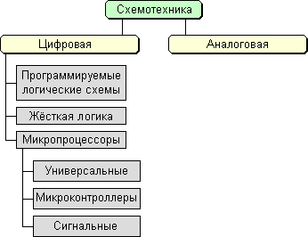
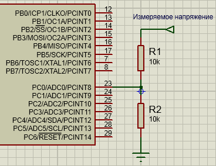

|
| Микроконтроллерные системы управления
|
|
|
|
Цифровые системы управления на базе микропроцессоров и микроконтроллеров
|
|
1.1 Эволюция средств вычислительной техники
|
История создания программируемых вычислительных устройств
началась ещё в 1830 г. с идеи, предложенной английским
математиком Чарльзом Бэбиджем (Charles Babage). В 1822 году
Бэббидж задумался о создании большой разностной машины, которая
позволила бы заменить множество людей, занимающихся вычислением
различных астрономических, навигационных и математических
таблиц. Это позволило бы сэкономить затраты на оплату труда, а
также избавиться от ошибок, связанных с человеческим
фактором.
Практическое же появление вычислительных машин стало возможным
только в XX в. в связи с развитием электроники. При этом можно
проследить несколько этапов развития ЭВМ.
Первый этап (до 1955 г.) – ламповые ЭВМ, масса которых
достигала 30 т, число электронных ламп – 18 тыс., потребляемая
мощность – 150 кВт (мощность, достаточная для небольшого
завода), объем памяти – 20 10-разрядных десятичных чисел, время
выполнения операций: сложения – 0,0002 с, умноже¬ния – 0,0028 с.
Числа в ЭВМ вводились с помощью перфокарт и набора на
переключателях, а программа задавалась соединением гнезд на
специальных наборных полях. Для ускорения процесса подготовки
программ стали создавать первые языки автоматизации
программирования (языки символического кодирования).
Второй этап (до 1965 г.) – появление ЭВМ, построенных на
транзисторах, привело к уменьшению их габаритов, массы,
энергопотребления и стоимости, а также к увеличению надежности и
производительности. Транзистор впервые был продемонстрирован 23
декабря 1947 г. тремя сотрудниками фирмы Bell Telephone
Laboratories Джоном Бардиным, Уолтером Бременом и Уильямом
Шокли. На этом этапе были созданы специальные алгоритмические
языки для инженерно-технических и экономических расчетов, а
также операционные системы (комплексы служебных программ,
обеспечивающих лучшее распределение ресурсов ЭВМ при исполнении
пользовательских задач). Эволюция операционных систем шла в
направлении обработки пакетов заданий, а также
мультипрограммного режима обработки данных.
- Элементная база – полупроводниковые элементы
(транзисторы).
- Соединение элементов – навесной монтаж и печатные платы.
- Габариты – ЭВМ выполнена в виде однотипных стоек.
- Быстродействие – 100 .. 500 тыс. операций в секунду.
- Программирование – на алгоритмических языках, появление ОС,
обработка пакетов заданий.
- Оперативная память – 2 ... 32 Кбайт.
Введён принцип разделения времени и микропрограммного
управления.
Третий этап (до 1970 г.) – прогресс в области технологии
производства интегральных микросхем (ИС) позволил повысить
производительность и снизить стоимость универсальных ЭВМ, а
также создать малогабаритные, простые, дешевые и надёжные машины
– мини-ЭВМ.
- Элементная база – интегральные схемы.
- Соединение элементов – печатные платы.
- Быстродействие – 1-10 млн. операций в секунду.
- Эксплуатация – вычислительные центры, дисплейные классы,
новая специальность – системный программист.
- Программирование – алгоритмические языки, ОС.
- Оперативная память – 64 Кбайт.
- Применяется принцип разделения времени, принцип модульности.
принцип микропрограммного управления, принцип
магистральности.
- Появление магнитных дисков, дисплеев, графопостроителей.
Мини-ЭВМ первоначально предназначались для замены
аппаратно-реализованных контроллеров (устройств управления) в
контуре управления каким-либо объектом, в автоматизированных
системах управления технологическими процессами, системах сбора
и обработки экспериментальных данных, различных управляющих
комплексах на подвижных объектах и т.д. Низкая цена серийной
мини-ЭВМ, большое число серийных устройств связи с объектом
управления и хорошее программное обеспечение обусловили
экономическую эффективность использования таких устройств.
Четвёртый этап (до 1978 г.) – успехи в развитии
электроники привели к созданию больших интегральных схем (БИС),
где в одном кристалле размещалось несколько десятков тысяч
электрических элементов. Это позволило разработать более дешевые
ЭВМ, имеющие большую память и меньший цикл выполнения команды.
Но так как затраты на программирование оставались высокими, то
на первый план вышла задача экономии человеческих, а не машинных
ресурсов.
В 1971 г. фирмой Intel был изготовлен первый микропроцессор i4004
– БИС, в котором полностью размещался простой четырехразрядный
процессор. Появились управляющие устройства, построенные на
одной или нескольких БИС, содержащих процессор, память, схемы
сопряжения с датчиками и исполнительными органами в объекте
управления.
- Элементная база – большие интегральные схемы (БИС);
- соединение элементов – печатные платы;
- габариты – компактные ЭВМ, ноутбуки;
- быстродействие – 10 .. 100 млн. операций в секунду;
- эксплуатация – многопроцессорные и многомашинные комплексы,
любые пользователи ЭВМ;
- программирование – базы и банки данных;
- оперативная память – 2 .. 5 Мбайт;
- телекоммуникационная обработка данных, объединение в
компьютерные сети.
Пятый этап (c 80-х г.г.) – улучшение технологии
производства БИС позволило изготавливать дешевые электронные
схемы, содержащие миллионы элементов в кристалле – схемы
сверхбольшой степени интеграции (СБИС). Появилась возможность
создать устройство с габаритами массового телевизора, в котором
размещались микроЭВМ, клавиатура, экран, дисковый накопитель, а
также схемы сопряжения с малогабаритным печатающим устройством,
измерительной аппаратурой, другими ЭВМ и т.д.
- Элементная база – дешёвые сверхбольшие интегральные схемы
(СБИС);
- Компактные системы, в которых размещается микроЭВМ,
клавиатура, экран, накопитель, а также схемы сопряжения с
печатающим устройством, измерительной аппаратурой, другими
ЭВМ и т.д.;
- Возможность параллельно решать на ЭВМ несколько задач;
- Компьютерные игры, прослушивание высококачественной музыки,
просмотр фильмов. Ввод печатной, рукописной, голосовой
информации, узнавание пользователя по голосу, перевод с
одного языка на другой, способность вести диалог, выполнять
команды, подаваемые голосом или прикосновением;
- Интерфейсы, управляемые непосредственно мозгом
(нейроинтерфейсы).
Способность вести диалог, выполнять команды, подаваемые голосом
или прикосновением. Возможность параллельно решать на ЭВМ
несколько задач. Основной задачей разработчиков ЭВМ V поколения
является создание искусственного интеллекта машины (возможность
делать логические выводы из представленных фактов), развитие
“интеллектуализации” компьютеров – устранения барьера между
человеком и компьютером. Компьютер теперь используется и дома,
это компьютерные игры, прослушивание высококачественной музыки,
просмотр фильмов. Уже сейчас компьютеры способны воспринимать
информацию с рукописного или печатного текста, с бланков, с
человеческого голоса, узнавать пользователя по голосу,
осуществлять перевод с одного языка на другой. Это позволяет
общаться с компьютерами всем пользователям, даже тем, кто не
имеет специальных знаний в этой области.
Наиболее широкое применение нашли микроЭВМ в гибких системах
автоматизации производства и научных исследований. В настоящее
время развитие идет в направлении как повышения вычислительной
мощности компьютеров, так и создания однокристальных
микроконтроллеров, ориентированных на управление различными
техническими объектами.
|
|
1.2 Принципы построения цифровых систем управления
В современных системах управления широко применяются микропроцессоры,
микроконтроллеры и другие средства вычислительной техники. Такая элементная
база позволяет унифицировать аппаратные средства, а также реализовать
сложные алгоритмы управления, обеспечивающие высокие качественные
характеристики для широкого круга технических объектов.
Структура аппаратных средств типовой микропроцессорной системы управления
приведена на рис. 1. Система содержит микроЭВМ, в состав которой входят
микропроцессор, память, а также устройства связи с объектом (интерфейсы),
которые обеспечивают преобразование цифровых кодов на выходе микроЭВМ в
сигналы, воспринимаемые объектом управления, а также преобразование выходных
сигналов датчиков в двоичные коды, поступающие в микроЭВМ. Такое
управляющее устройство с некоторым тактом (интервалом квантования) на
основании информации о текущем состоянии объекта, а также командных сигналов
рассчитывает управляющее воздействие.

Рис. 1. Система управления на базе микроЭВМ
При построении систем управления на базе микропроцессоров и микроЭВМ следует
учитывать следующие особенности программной реализации алгоритмов
управления:

Рис. 2. Классификация устройств схемотехники
- запаздывание, вносимое микроЭВМ;
- временное и амплитудное квантование сигналов;
- возможности реализации сложных логических и вычислительных процедур,
обеспечивающих адаптацию к изменениям параметров объектов и возмущающих
воздействий.
Следует заметить, что цифровые системы управления на базе микропроцессоров и
микроЭВМ иногда называют устройствами на основе «программируемой»
(гибкой) логики, что означает возможность их перенастройки для управления
различными объектами путем изменения программы. Альтернативным методом
построения цифровых систем управления является использование «жесткой»
логики (комбинационных схем не имеющих внутренней памяти, где уровни
сигналов
на выходах однозначно определяются уровнями входных сигналов в данный момент
времени), при которой ядром устройства является заказная БИС,
реализующая алгоритмы управления для узкого круга объектов. Очевидно, что
второй метод на сегодняшний день является более дорогостоящим, однако он
широко используется при массовом производстве устройств управления для
типовых объектов либо при создании систем управления объектами специального
назначения. Для промышленного применения наиболее рациональным является
первый метод, основанный на применении микропроцессоров и
микроконтроллеров.
|
|
Архитектура управляющей микроЭВМ
|
|
2.1 Основные понятия и определения
Микропроцессор – программно-управляемое устройство, предназначенное
для обработки цифровой информации и управления процессом этой
обработки. Обычно микропроцессор (МП) состоит из одной (иногда нескольких)
интегральных схем и имеет доступ к внешней памяти. Он также обеспечивает
передачу информации между компонентами ЭВМ и внешней средой. МП является
основой любой микроЭВМ и производится по технологии больших интегральных
схем (БИС).
МикроЭВМ – вычислительное или управляющее устройство, содержащее
микропроцессор, оперативное запоминающее устройство (ОЗУ), постоянное
запоминающее устройство (ПЗУ), таймер, порты ввода/вывода, генератор
тактовых импульсов, блок питания и другие элементы.
Однокристальный микроконтроллер – БИС, содержащая в себе МП, ОЗУ, ПЗУ
небольшого объема, таймеры/счётчики, порты ввода/вывода, и
ориентированная на решение задач управления. Появлению микроконтроллеров
способствовало совершенствование технологии производства микроэлектроники,
что позволило интегрировать на одном кристалле большинство функциональных
блоков управляющей микроЭВМ. В большинстве микроконтроллеров используется
восьмиразрядное вычислительное ядро с упрощенной системой команд. Память
физически и логически разделена на память программ и память данных.
Подсистема ввода/вывода микроконтроллеров часто имеет аналого-цифровые и
цифроаналоговые преобразователи для возможности ввода сигналов от датчиков
и вывода сигналов на исполнительное устройство.
Цифровой процессор сигналов (Digital Signal Processor, DSP) – это
специализированный микроконтроллер, ориентированный на решение задач
цифровой фильтрации в режиме реального времени. Обычно DSP имеет мощное
вычислительное ядро, спроектированное, однако, только для решения
узкоспециализированных задач. По этой причине сигнальные процессоры имеют
сравнительно невысокую стоимость по сравнению с обычной микроЭВМ,
реализующей аналогичные функции. Применяемые, например в области
телекоммуникаций DSP имеют производительность до 1,6 млрд. операций/с. С
архитектурной точки зрения такие процессоры могут представлять собой
аналоговые функциональные преобразователи сигналов. Часто они выполняют
функции
аналоговых схем (например производят генерацию колебаний, модуляцию,
смещение, фильтрацию, кодирование и декодирование сигналов в реальном
масштабе
времени и т.д., заменяя сложные схемы, состоящие из операционных усилителей,
катушек индуктивности, конденсаторов и т.д.).
2.2 Архитектура микропроцессора
Особенность МП как устройства с программируемой логикой заключается в
подчиненности его аппаратного состава (или структуры совокупности элементов,
составляющих МП, и связей между ними) принципу программируемости. Это
означает, что функции, реализуемые МП, определяются не столько его
структурой, сколько последовательностью управляющих слов (команд),
поступающих из программной памяти на входы МП. При изменении этой
последовательности изменяется и функция, выполняемая МП. Поэтому разработчик
микроЭВМ при анализе функциональных возможностей МП должен учитывать не
только его структуру, но и возможности программной реализации функций.
 Рис. 3. Обобщённая структурная схема ЭВМ
Рис. 3. Обобщённая структурная схема ЭВМ
Все ЭВМ содержат следующие функциональные блоки, имеющие свою архитектуру:
процессор, состоящий из арифметико-логического устройства (АЛУ), регистров
общего назначения (РОН) и устройства управления (УУ), память (оперативная –
ОЗУ и постоянная – ПЗУ), устройства ввода-вывода информации. Устройство
управления формирует управляющие сигналы для работы РОН и АЛУ, а те, в свою
очередь, формируют признаки (или флаги) . Объединение функциональных блоков
в ЭВМ осуществляется посредством системы шин: шины данных, по которой
осуществляется обмен данными между блоками ЭВМ, шины адреса, используемой
для передачи адресов, по которым осуществляется обращение к различным
устройствам ЭВМ, и шины управления для передачи управляющих сигналов (рис.
3).
Связь с пользователем осуществляется с помощью пульта управления, который
позволяет выполнить такие действия, как пуск ЭВМ; останов, под действием
которого прекращается поступление сигналов с генератора тактовых импульсов и
процессор переходит в состояние ожидания; загрузка начального адреса
программы; её пошаговое выполнение при отладке.
МП можно классифицировать по нескольким признакам:
1. По количеству БИС различают однокристальные, многокристальные и
многокристальные секционные микропроцессоры.
В однокристальном МП все его аппаратные средства реализованы в виде одной
БИС, имеющей фиксированную разрядность и жесткую систему команд. Параметры
однокристальных микропроцессоров улучшаются по мере увеличения степени
интеграции элементов в кристалле и числа выводов корпуса. Однако возможности
однокристальных микропроцессоров ограничены аппаратными ресурсами кристалла
и корпуса. Поэтому при разбиении его логической структуры на функционально
законченные части можно реализовать процессор в виде нескольких работающих
автономно БИС с фиксированной разрядностью и гибкой системой команд. Такой
МП называется многокристальным (рис. 4).
Рис. 4. Многокристальный секционный процессор
При создании высокопроизводительных многоразрядных микропроцессоров
требует¬ся множество аппаратных средств, не реализуемых в доступных БИС,
поэтому возникает необходимость в дальнейшем функциональном разбиении
логической структуры МП вертикальными и горизонтальными плоскостями. В
результате такого разделения на конструктивно законченные части создаются
условия реализации каждой функции в виде отдельной БИС. Все они образуют
комплект многокристального секционного микропроцессора (рис. 3) с
произвольной разрядностью и гибкой системой команд. Таким образом,
микропроцессорная секция – это БИС, предназначенная для обработки нескольких
разрядов данных или выполнения определённых управляющих операций.
2. По организации внешних шин различают микропроцессоры с раздельными
или совмещенными шинами адреса и данных.
3. По организации внутренних шин различают микропроцессоры с одной,
двумя и тремя внутренними шинами.
В одношинных МП все его элементы имеют одинаковый интерфейс и подключены к
единой информационной шине, по которой передаются коды данных, адресов и
управляющих сигналов. В многошинных процессорах его элементы группами
подключаются к своей информационной шине. Это позволяет осуществить
одновременную передачу информационных сигналов по нескольким (или всем)
шинам. Такая организация систем усложняет их конструкцию, однако,
увеличивает производительность.
4. По организации стека различают микропроцессоры со встроенным,
расположенным на кристалле МП и автономным стеком, который реализован в
оперативной памяти.
5. МП также различают по их возможности выполнять за один машинный цикл одну
или более команд. Это возможно при построении МП по конвейерному
принципу, что позволяет совместить по времени несколько операций
выполнения команды. При этом рационально используются аппаратные ресурсы и
повышается производительность. Однако это ведёт к резкому росту
транзисторного бюджета, увеличивает площадь кристалла, а значит и его
стоимость. Если архитектура вычислительного ядра имеет несколько декодеров
команд, которые могут нагружать работой множество исполнительных блоков
(т.е. имеет несколько конвейеров), то такие МП называют суперскалярными.
Планирование исполнения потока команд в них является динамическим и
осуществляется самим вычислительным ядром.
6. По количеству одновременно выполняемых потоков команд
микропроцессоры делят на одно- и многопоточные. ЭВМ с многопоточным МП
рассматривается программным обеспечением как система, имеющая более одного
центрального процессора со своими наборами РОН, хотя и не всегда с
соответствующим количеством АЛУ и устройств управления. ЭВМ с многопоточным
МП способна выполнять более одного потока команд (более одной программы)
одновременно. Если же каждый набор РОН многопоточного МП имеет ещё и
собственный исполнительный блок (ядро), то такой процессор называют многоядерным.
2.3 Организация шин микропроцессорных систем
Все функциональные блоки, как в самом микропроцессоре, так и в микроЭВМ,
объединяются с помощью набора проводников, называемого шиной. Посредством
шины данных осуществляется обмен информацией между блоками ЭВМ. Шина адреса
используется для передачи адресов, по которым осуществляется обращение к
различным устройствам ЭВМ. Шина управления необходима для передачи
управляющих сигналов. Различают внутренние (в самом микропроцессоре) и
внешние шины, а также МП с одной, двумя и тремя внутренними шинами (рис.
5).
Рис. 5. Топология:
а – трёхшинная, б – двухшинная, в – одношинная
Трёхшинная топология не требует буферных регистров, поэтому возможно
выполнение арифметических и логических операций за один такт, включая
выборку операндов из РОН и запись результатов в один из регистров. Этот
способ помимо высокого быстродействия имеет еще одно важное достоинство –
отсутствие буферных регистров. Главный недостаток такой топологии
заключается в значительной занимаемой площади шин на кристалле (до 18
%).
Рационального баланса между числом внутренних шин и числом элементов
микропроцессора можно достичь при двухшинной организации, которая при
меньшей площади, занимаемой шинами на кристалле, требует введения по меньшей
мере одного буферного регистра. Это значит, что арифметические и логические
операции в таком МП будут выполняться не менее чем за два такта:
1) загрузка буферного регистра одним из операндов;
2) выполнение операции в АЛУ над содержимым буферного регистра и одного из
РОН; запись результата в РОН.
Наконец, возможна организация МП на основе только одной шины. Наименьшая
площадь, занимаемая шиной по сравнению с рассмотренными выше вариантами,
позволяет в максимальной степени усложнить архитектуру МП при фиксированной
площади кристалла. Однако необходимость введения не менее двух буферных
регистров увеличивает цикл выполнения операций уже до трёх тактов:
1) загрузка буферного регистра одним из операндов;
2) загрузка второго буферного регистра вторым операндом;
3) выполнение операции в АЛУ над содержимым буферных регистров и запись
результата в РОН.
При построении вычислительной системы необходимо учитывать, что выходные
линии шин МП позволяют подключать не более одной-двух TTL-нагрузок, поэтому
необходимо использовать внешние буферные усилители (шинные формирователи).
Внешние шины обеспечивают связь микропроцессора с ОЗУ, ПЗУ и портами
вода/вывода. При их организации существует два ограничения:
1) на количество внешних выводов БИС;
2) на нагрузочную способность линий.
Ограничение количества внешних выводов корпуса микросхемы привело к появлению
микропроцессоров с совмещенной (мультиплексированной) шиной (рис. 6), по
которой в разные моменты времени передаются сигналы как адреса, так и
данных.
Рис. 6. Микропроцессор:
а – с раздельными шинами, б – с совмещенными шинами
При использовании шинной организации как внутри кристалла, так и при
подключении нескольких БИС к одной шине возникает дополнительная трудность,
связанная со способом связи нескольких элементов с одним проводником общей
шины. В качестве примера проанализируем способы организации общей шины в МП,
выполненном по схеме на рис. 4, в). С каждым проводником общей шины связаны
три входа (РОН, буферный регистр и регистр сдвига) и два выхода (РОН, АЛУ).
Известны три способа решения этой задачи (рис. 6): логическим объединением,
объединение с помощью схем с открытым коллектором и объединение с
использованием схем с тремя устойчивыми состояниями.
Рис. 7. Подключение нескольких источников к одной шине:
а – логическим объединением, б – «монтажным ИЛИ», в – объединением на базе
схем с тремя устойчивыми состояниями
Логическое объединение (рис. 6, а) выполняется с помощью схемы ИЛИ, на входы
которой при подаче управляющего сигнала на общей шине появляется выходной
сигнал АЛУ, а при подаче сигнала – выходной сигнал РОН. Этот способ может
использоваться при создании внутренней шины (на кристалле). Объединение с
помощью схем с открытым коллектором характеризуется электрическим
соединением выходов нескольких логических элементов. Поэтому этот способ
часто называют «монтажным ИЛИ» (рис. 6, б). При простом соединении выходов
элементов отпадает необходимость в схеме ИЛИ, используемой при логическом
соединении, а следовательно, нет принципиального ограничения на число
объединяемых выходов. Это позволяет применять данный способ при организации
не только внутренних, но и внешних шин, учитывая, однако, что количество
объединяемых линий ограничено конечным сопротивлением закрытых транзисторов,
что фактически ограничивает область применимости этого способа
организации.
Логическим его развитием, устраняющим указанный недостаток, является
использование в качестве нагрузочного резистора нелинейного элемента.
Объединение с использованием схем с тремя состояниями отличается именно
таким характером нагрузки. Третье состояние обеспечивается, когда оба
транзистора одного каскада закрыты. Этот способ широко применяются при
организации внешних шин, которые реализуются в виде дорожек печатной платы
или плоского кабеля.
2.4 Обработка информации в микропроцессоре
Рассмотрим процесс обработки информации в микропроцессоре на примере
упрощенной схемы, представленной на рис. 8.
Микропроцессор имеет:
- РОН – регистры общего назначения, которые используются для хранения
данных и адресов. Кроме РОН в МП имеются специальные регистры: счётчик
команд, указатель стека и др.;
- БР – буферный регистр, используется для промежуточного хранения
операнда, иногда выполняет функции регистра сдвига;
- АЛУ – комбинационная схема, построенная на логических элементах И, ИЛИ,
НЕ, выполняющая арифметические и логические преобразования информации.
Рис. 8. Упрощённая схема микропроцессора
Выполнение команд разбивается на такты и осуществляется в операционном
устройстве под управлением УУ. Рассмотрим пример выполнения операции
сложения R0 → R1 = R0:
Такт 1. R0 → Шина 2 → БР ; данные R0 →
по шине 2 передаются в БР
Такт 2. R1 → Шина 2 → АЛУ ; данные R1 по шине
2 передаются в АЛУ
Такт 3. Сложение в АЛУ
Такт 4. АЛУ → Шина 1 → R0 ; результат АЛУ по шине 1
передаётся в R0
Эта схема универсальна, т.к. позволяет выполнять множество различных
операций. Для работы операционного устройства необходимо формировать
управляющие сигналы, обеспечивающие выдачу синхроимпульсов для чтения,
записи, адресацию РОН и настройку АЛУ на конкретную операцию. При выполнении
арифметических, логических и некоторых других операций в специальном
регистре слова-состояния программы формируются признаки (флаги) результата,
необходимые для операций условного перехода. Реализация более сложных команд
требует использования специальных блоков (умножения, деления, и др.). Для
ускорения выполнения определенных операций вводятся дополнительно
специальные операционные узлы (например циклические сдвигатели).
2.5 Управление обработкой информации
Управление операциями в ЭВМ осуществляет устройство управления с помощью
управляющих сигналов, генерируемых по командам программы. Коды операции
команд программы, воспринимаемые управляющей частью микропроцессора,
расшифрованные и преобразованные в ней, дают информацию о том, какие
операции требуется выполнить, где в памяти расположены данные, куда
необходимо направить результат и где расположена следующая за выполняемой
команда.
Рис. 9. Процесс выполнения команды в МП
В соответствии с циклом фон Неймана (рис. 9), устройство управления в рамках
тактовых интервалов (такт – минимальный рабочий интервал, в течение которого
совершается одно элементарное действие; цикл – интервал времени, в течение
которого выполняется одна машинная операция) осуществляет: выборку команды;
ее дешифрацию с целью анализа формата, служебных признаков и вычисления
адреса операнда (операндов); установление временной последовательности всех
функциональных управляющих сигналов; генерацию управляющих импульсов и
передачу их на управляющие шины функциональных частей микроЭВМ и логические
элементы между ними; анализ результата операции и формирование адреса
следующей команды; выполнение команды. При этом фаза выборки может
повторяться, если команда имеет длину больше одного байта.
В микропроцессорах используют два метода выработки совокупности
функциональных управляющих сигналов: аппаратный и микропрограммный.
Выполнение операций в машине сводится к элементарным преобразованиям
информации (передача информации между узлами в блоках, сдвиг информации в
узлах, логические поразрядные операции, проверка условий и т.д.) в
логических элементах, узлах и блоках под воздействием функциональных
управляющих сигналов устройства управления. Элементарные преобразования, не
разложимые на более простые, выполняются в течение одного такта сигналов
синхронизации и называются микрооперациями.
Рис. 10. Аппаратное устройство управления
В аппаратных (схемных) устройствах управления (рис. 10) каждой операции
соответствует свой набор логических схем, вырабатывающих определенные
функциональные сигналы для выполнения микроопераций в определенные моменты
времени. Для каждого КОП выдаются в течение нескольких тактов. УУ
оптимизируется для конкретной системы команд, которую в дальнейшем изменить
нельзя. При этом способе построения устройства управления реализация
микроопераций достигается за счет однажды соединенных между собой логических
схем, поэтому ЭВМ с аппаратным устройством управления называют ЭВМ с жесткой
логикой управления. Это понятие относится к фиксации системы команд в
структуре связей ЭВМ и означает практическую невозможность каких-либо
изменений в системе команд ЭВМ после ее изготовления.
Рис. 11. Микропрограммное устройство управления:
М/к – микрокоманда;
ДШ – дешифратор;
СУ – схема управления
При микропрограммной реализации устройства управления (рис. 11) в состав
последнего вводится ЗУ, каждый разряд выходного кода которого определяет
появление функционального сигнала управления. Поэтому каждой микрооперации
ставится в соответствие свой информационный код – микрокоманда. Набор
микрокоманд и последовательность их реализации обеспечивают выполнение любой
сложной операции. Набор микроопераций называют микропрограммами. Способ
управления операциями путем последовательного считывания и интерпретации
микрокоманд из ЗУ (наиболее часто в виде микропрограммного ЗУ используют
быстродействующие программируемые логические матрицы), а также использования
кодов микрокоманд для генерации функциональных управляющих сигналов называют
микропрограммным, а микроЭВМ с таким способом управления – микропрограммной,
или с гибкой логикой управления. При этом Yi для всех команд и всех тактов
записываются в ПЗУ в виде микрокоманд. Кроме того, в каждую микрокоманду
записывается адрес следующей микрокоманды. Микрокоманды имеют разрядность
50…100, поэтому для сокращения длины их шифруют, а затем дешифрируют. Адрес
первой микрокоманды определяет КОП, а каждая микрокоманда соответствует
одному такту.
К микропрограммам предъявляют требования функциональной полноты и
минимальности. Первое требование необходимо для обеспечения возможности
разработки микропрограмм любых машинных операций, а второе связано с
желанием уменьшить объем используемого оборудования. Учёт фактора
быстродействия ведет к расширению микропрограмм, поскольку усложнение
последних позволяет сократить время выполнения команд программы.
2.6 Архитектура 8-разрядного микропроцессора
Типичным представителем 8-битных однокристальных микропроцессоров является
разработанный фирмой Intel в 1974 г. i8080 или его советский аналог
К580ИК80. Кристалл процессора производился по технологическим нормам 6 мкм,
вмещал 6000 транзисторов и имеел тактовую частоту 2 МГц, а более поздний его
вариант i8080A (советский аналог К580ВМ80) –
2,5 МГц. Процессор снабжен 8-разрядной шиной данных, 16-разрядной шиной
адреса, с помощью которой адресует 216 = 64 Кбайт памяти, 256
устройств ввода и 256 устройств вывода. МП работает от трёх источников
питания – +5, +12 и –5 В и рассеивает мощность 1,25 Вт. Длительность такта
при частоте 2 МГц составляет 0,5 мкс, при этом быстродействие – 500 000
коротких операций (регистр-регистр) в секунду.
Программно-аппаратная модель КР580ВМ80А представлена на рис. 12.
 Рис. 12. Программно-аппаратная
модель КР580ВМ80А
Рис. 13. Структурная схема
КР580ВМ80А
Арифметическо-логическое устройство (АЛУ) обеспечивает выполнение
арифметических, логических операций и операций сдвига над двоичными данными,
представленными в дополнительном коде, или над двоично-десятичными данными.
Устройство содержит схему десятичной коррекции (СДК), позволяющую
производить операции десятичной арифметики. По результатам операций в АЛУ
формируется ряд признаков, которые записываются в регистр флагов F. Признак
переноса С устанавливается в единицу, если в результате выполнения команды
появляется перенос из старшего разряда. Дополнительный признак переноса AС
устанавливается в единицу при возникновении переноса из третьего разряда.
Используется в командах десятичной арифметики. Признак четности Р
устанавливается в единицу, если число единиц в разрядах результата четное.
Признак нуля Z устанавливается в единицу, если результат равен нулю. Признак
знака S указывает знак числа и равен единице, если число отрицательное, или
нулю, если число положительное.
Блок регистров производит приём, хранение и выдачу различной информации,
участвующей в процессе выполнения программы, и содержит счётчик команд
(Program Counter, PC), указатель стека (Stack Pointer, SP), регистры общего
назначения (РОН), регистры временного хранения и регистр адреса.
16-разрядный счётчик команд хранит текущий адрес команды. Содержимое
счётчика команд автоматически увеличивается после выборки каждого байта
команды. 16-разрядный указатель стека содержит начальный адрес памяти,
используемый для хранения и восстановления содержимого программно-доступных
регистров МП. Содержимое указателя стека уменьшается, когда данные
загружаются в стек, и увеличивается, когда данные выбираются из стека.
8-разрядные регистры общего назначения В, С, D, Е, Н, L могут применяться
как накопители и указатели (16-разрядный адрес операнда определяется
содержимым пары регистров). Основной однобайтный регистр процессора – это
аккумулятор A. Над его содержимым выполняется наибольшее количество
арифметических и логических команд, а также команды ввода/вывода. Регистры
временного хранения W, Z используются для приема и временного запоминания
второго и третьего байт команд переходов, передаваемых с внутренней
магистрали ЦПУ в счётчик команд. Эти регистры являются
программно-недоступными. 16-разрядный регистр адреса принимает и хранит в
течение одного машинного цикла адрес команды или операнда и выдает его через
буфер адреса на однонаправленную выходную магистраль А0-А15. Буфер адреса
выполнен в виде выходных формирователей, имеющих на выходе состояние
«Отключено».
Устройство управления формирует комплекс управляющих сигналов, организующих
выполнение поступившей в МП команды, и состоит из регистра команд,
программируемой логической матрицы (ПЛМ) и схемы управления узлами.
8-разрядный регистр команд осуществляет прием и хранение команды,
поступающей по шине данных. Программируемая логическая матрица дешифрирует
код операции команды и формирует микрооперации в соответствии с
микропрограммой выполнения команды. Схема управления узлами вырабатывает для
различных узлов микропроцессора необходимые управляющие сигналы. 8-разрядный
буфер данных обеспечивает ввод команд и данных в МП, вывод данных через
формирователи, имеющие высокоомное состояние.
Сигнал «Сброс» обнуляет счётчик команд PC (но не регистры), что эквивалентно
выполнению программы с адреса 0000H.
Схема синхронизации и управления состояниями МП формирует машинные такты и
циклы, которые координируют выполнение всех команд, и вырабатывает сигнал
SYNC «Синхронизация», определяющий начало каждого машинного цикла. Для
выполнения команды требуется 1–5 машинных циклов, каждый из которых может
состоять из 3–5 тактов (Т1-Т5). Длительность каждого из них соответствует
периоду следования противофазных тактовых импульсов Ф1, Ф2.
Первый цикл выполнения любой команды, – это цикл выборки (такт Т1), в котором
содержимое счётчика команд выдаётся на адресную шину, а на шину данных –
слово-состояние машинного цикла (ССМЦ), сопровождаемое сигналом
синхронизации, по которому это слово записывается в буферный регистр внешних
схем управления. ССМЦ позволяет различить 10 типов машинного цикла (чтение
первого байта команды, ввод/вывод, чтение/запись в память, чтение/запись в
порты ввода/вывода). В такте Т2 содержимое счётчика команд увеличивается на
единицу и осуществляется анализ управляющих сигналов «Готовность» и «Захват
шин». В цикле чтения/записи на такте Т3 данные принимаются из памяти по шине
данных и записываются в регистр команд (если выполняется цикл выборки
команды) или в один из регистров МП. В тактах Т4 и Т5, если они необходимы,
выполняются действия над операндами. Если команда включает несколько циклов,
то по завершении текущего машинного цикла процессор переходит к такту Т1
следующего цикла.
2.7 CISC, RISC и VLIW архитектуры
CISC. Поначалу развитие микропроцессоров шло в направлении создания
компьютеров, способных выполнять как можно больше различных команд. Это
облегчало ручное написание ассемблерных программ, а использование сложных
команд значительно сокращало размеры программы и повышало скорость её
выполнения. В последних версиях ЭВМ выразительность ассемблерного кода
зачастую не уступала выразительности программы, написанной на языке высокого
уровня. Одной командой можно было сказать практически всё, что угодно. К
примеру, такие ЭВМ, как DEC VAX, аппаратно поддерживали команды “добавить
элемент в очередь”, “удалить элемент из очереди” и даже “провести
интерполяцию полиномом”! Отсюда и общее название соответствующих архитектур:
CISC – Complex Instruction Set Computers (“компьютеры с набором команд на
все случаи жизни”).
Другая особенность – многие команды допускали все возможные методы
адресации – к примеру, и операнды, и результат в арифметических
операциях доступны не только в регистрах, но и через непосредственную
адресацию, и прямо в памяти. Подобные команды оказалось сложно не только
выполнять, но и просто декодировать. Чтобы машинный код из-за сложных команд
не разрастался до огромного размера, команды имели неоднородную структуру
(разное расположение и размеры кода операции и её операндов) и сильно
отличающуюся длину (в x86, например, длина команд варьируется от 1 до 15
байт).
Другой проблемой стало то, что при сохранении приемлемой сложности процессора
многие команды оказалось невозможно выполнить “аппаратно”, и поздние
CISC-процессоры имеют специальные блоки, которые “на лету” заменяют сложные
команды на последовательность простых. В результате CISC-процессоры
оказались весьма трудоёмкими в проектировании и изготовлении. И, наконец,
исследования ПО того времени, проведённые фирмой IBM, наглядно показали, что
даже программисты, пишущие на ассемблере, эти возможности CISC-архитектуры
почти никогда не использовали, а компиляторы языков высокого уровня – и не
пытались использовать.
К началу восьмидесятых годов классические CISC полностью исчерпали себя.
Расширять набор команд в рамках этого подхода дальше не имело смысла,
наоборот – технологи столкнулись с тем, что из-за высокой сложности
CISC-процессоров оказалось трудно наращивать их тактовую частоту, а из-за
“медленности” ОЗУ процессорные расшифровки сложных команд работают медленнее
обычных подпрограмм. Поэтому стало очевидным, что CISC-процессоры нужно
упрощать.
RISC. Reduced Instruction Set Computer
(компьютер с сокращённым набором команд) – архитектура процессора, в которой
быстродействие увеличивается за счёт упрощения команд, чтобы их дешифрация
была простой, а время выполнения – короче. Это также облегчает повышение
тактовой частоты и делает более эффективной суперскалярность
(распараллеливание команд между несколькими исполнительными блоками).
Для начала разработчики свели к минимуму набор команд и к абсолютному
минимуму – количество режимов адресации памяти; упаковав всё, что осталось,
в простой и удобный для дешифрации регулярный машинный код. В частности, в
классическом варианте RISC из команд, обращающихся к оперативной памяти,
оставлены только две (Load – загрузить данные в регистр и Store – сохранить
данные из регистра; так называемая Load/Store-архитектура), и нет ни одной
команды вроде вычисления синуса, косинуса или квадратного корня. Первые
RISC-процессоры даже не имели команд умножения и деления.
Вторая важная особенность RISC-процессоров, – большое количество РОН (более
шестнадцати), причём почти все эти регистры полностью равноправны, что
позволяет компилятору свободно распоряжаться ими, сохраняя большую часть
промежуточных данных именно там, а не в стеке или оперативной памяти. В
классическом x86 IA-32 всего восемь РОН, причём каждому из них приписано то
или иное “специальное назначение” (в ESP хранится указатель на стек)
затрудняющее или делающее невозможным его использование.
Таким образом, RISC-процессоры в 2..4 раза быстрее имеющих ту же тактовую
частоту CISC-процессоров с обычной системой команд, несмотря на больший
объём программ (на 30%). Дейв Паттерсон и Карло Секуин сформулировали 4
основных принципа RISC архитектуры:
- Любая команда выполняется за один такт, независимо от её типа.
- Система команд должна содержать минимальное количество наиболее часто
используемых простейших команд одинаковой длины.
- Команды обработки данных реализуются только в формате "регистр-регистр"
(операнды выбираются из РОН, и результат операции записывается также в
РОН; а обмен между РОН и памятью выполняется только с помощью команд
загрузки-записи).
- Состав системы команд должен быть "удобен" для компиляции операторов
языков высокого уровня.
Большинство существующих процессоров – RISC-подобные (ARM, AVR, MIPS,
PowerPC, ...). Даже МП архитектуры x86 ранее являлись CISC-процессорами, но
начиная с i486, являются CISC-МП с RISC-ядром. Они перед исполнением
преобразуют CISC-команды x86 в более простой набор внутренних RISC-команд.
Однако уменьшившаяся сложность RISC-CPU, увеличение тактовой частоты и
ускорение исполнения команд привела к увеличению длины программ и сильно
уменьшила их вычислительную плотность (количество вычислений на единицу
длины машинного кода). Поэтому при появлении первых RISC-процессоров был
сделан следующий шаг – введён конвейер.
VLIW. Very Large Instruction Word – архитектура появилась относительно
недавно – в 1990-х годах. Её особенностью является использование очень
длинных команд (до 128 бит и более), отдельные поля которых содержат коды,
обеспечивающие выполнение различных операций. Таким образом, одна команда
вызывает выполнение сразу нескольких операций параллельно в различных
операционных устройствах, входящих в структуру микропроцессора. При
трансляции программ, написанных на языке высокого уровня, соответствующий
компилятор производит формирование "длинных" VLIW-команд, каждая из которых
обеспечивает реализацию процессором целой процедуры или группы операций.
Данная архитектура реализована в некоторых типах современных
микропроцессоров (РА8500 компании Hewlett-Packard, Itanium – совместная
разработка Intel и HP, некоторые типы DSP-цифровых процессоров сигналов) и
является весьма перспективной для создания нового поколения
сверхвысокопроизводительных процессоров.
2.8 Конвейерное выполнение команд
Идея конвейера состоит в том, что производительность цепочки последовательных
действий определяется длительностью самой сложной операции. Если разбить
выполнение команды на несколько этапов, то тактовая частота будет обратно
пропорциональна времени выполнения самого медленного этапа. Если это время
удастся сделать достаточно малым (а чем больше этапов на конвейере, тем они
короче), то можно повысить тактовую частоту, а значит, и производительность
МП.
Выполнение любой команды можно разбить как минимум на пять непересекающихся
этапов:
- Выборка команды (FETCH) из памяти.
- Декодирование (DECODE). Процессор определяет последовательность
действий, необходимых для выполнения команды и переправляет запрос на
нужное исполнительное устройство.
- Подготовка исходных данных для выполнения команды.
- Выполнение команды (EXECUTE).
- Сохранение полученных результатов.
Конвейеризация потенциально применима к любой процессорной архитектуре,
независимо от набора команд и положенных в её основу принципов. Даже самый
первый x86-процессор, Intel 8086, уже содержал своеобразный примитивный
“двухстадийный конвейер” – выборка новых команд (FETCH) и их исполнение
осуществлялись в нём независимо друг от друга. Однако реализовать что-то
более сложное для CISC-процессоров оказалось трудно. Подобных проблем у
RISC-архитектуры гораздо меньше, поэтому конвейеризированные RISC-процессоры
появились ранее аналогичных x86.
Существуют три проблемы реализации конвейера.
1. Необходимость наличия блокировок конвейера. Время исполнения команд
может сильно варьироваться. Умножение и деление требуют нескольких тактов, а
сложение или побитовые операции – одного такта. Для операций Load и Store,
которые могут обращаться к разным уровням кэш-памяти или к оперативной
памяти, это время вообще не определено (и может достигать сотен тактов).
Поэтому необходим механизм, притормаживающий выборку и декодирование новых
команд, пока не будут завершены старые. Для решения этой проблемы в
процессорах перед исполнительными устройствами появляются специальные
блоки-диспетчеры, которые накапливают подготовленные к исполнению команды,
отслеживают выполнение ранее запущенных команд и по мере освобождения
исполнительных устройств отправляют на них новые команды. Даже если
исполнение займёт много тактов – внутренняя очередь диспетчера позволит в
большинстве случаев не останавливать подготавливающий всё новые и новые
команды конвейер. Новые команды также удаётся декодировать не каждый такт,
поэтому возможна обратная ситуация, когда новых команд за такт не появилось,
и диспетчер отправляет команды на выполнение “из старых запасов”. Так в
процессоре возникает разделение на две независимо работающие подсистемы:
Front-end – блоки, занимающиеся декодированием команд и их подготовкой к
исполнению, и Back-end – блоки, исполняющие команды.
2. Необходимость наличия системы сброса процессора. Поскольку операции
FETCH и EXECUTE всегда выделены в отдельные стадии конвейера, то в тех
случаях, когда в программном коде происходит условный переход, зачастую
оказывается, что по какой из веток пойти – пока неизвестно: команда,
вычисляющая код условия, ещё не выполнена. В результате процессор вынужден
либо приостанавливать выборку новых команд, пока не будет вычислен код
условия (а это может занять очень много времени и в типичном цикле
затормозит процессор), либо, руководствуясь соображениями блока предсказания
переходов, “угадывать”, какой из переходов скорее всего окажется правильным.
3. Наконец, конвейер обычно требует наличия специального планировщика
решающего конфликты по данным. Если в программе идет зависимая цепочка
команд (когда команда-2, следующая за командой-1, использует для своих
вычислений данные, только что вычисленные командой-1), а время исполнения
одной команды превосходит один такт, то приходится придержать выполнение
очередной команды, до выполнение её предшественницы. Рассмотрим, к примеру,
вычисление выражения A•B+C с сохранением результата в переменной X
(X=A•B+C). МП, должен вначале дождаться, пока первая команда сохранит
результат умножения A•B, и только потом прибавлять к полученному результату
число С. Цепочки зависимых команд в программах – скорее правило, нежели
исключение, а исполнение команды с записью результата в регистры за один
такт – наоборот, скорее исключение, нежели правило, поэтому в той или иной
степени с проблемой зависимости по данным любая конвейерная архитектура
обязательно сталкивается. Таким образом, в конвейере появляются сложные
декодеры, заранее выявляющие эти зависимости, и планировщики, которые
запускают команды на исполнение, выдерживая паузу между запуском главной
команды и зависимой от неё.
Идея конвейера в процессоре очень красива на словах и в теории, однако
реализовать её даже в простом варианте чрезвычайно трудно. Но выгода от
конвейеризации столь велика и несомненна, что приходится с этими трудностями
мириться, ведь ничего лучшего до сих пор не придумано.
В 1991-92 годах Intel, выпустила i486 с миллионом транзисторов – CISC-МП с
пятистадийным конвейером. Тактовую частоту по сравнению с i386 введение
конвейера позволило увеличить втрое, а производительность на единицу частоты
– вдвое. В i386 многие команды выполнялись за несколько тактов; а в i486
среднее “время” исполнения команды в тактах удалось снизить почти вдвое.
Правда, расплатой за это стала чудовищная сложность ядра i486, но быстро
растущие технологические возможности кремниевой технологии уже через пару
лет позволили освоить производство i486 всем желающим. Но к тому моменту
RISC-архитектуры сделали ещё один шаг вперед – к суперскалярным
процессорам.
Суперскалярность – архитектура вычислительного ядра, использующая несколько
декодеров команд, которые могут нагружать работой множество исполнительных
блоков. Планирование исполнения потока команд является динамическим и
осуществляется самим вычислительным ядром.
2.9 Блок предсказания переходов
Блок предсказания условных переходов – устройство МП определяющее направление
ветвлений в исполняемой программе. Он позволяет осуществлять предварительную
выборку команд и данных из памяти, а также выполнять команды, находящиеся
после условного перехода, до того, как он будет выполнен. Существует два
основных метода предсказания переходов: статический и динамический.
Статические методы предсказания ветвлений являются наиболее простыми. Их суть
состоит в том, что различные типы переходов либо выполняются всегда, либо не
выполняются никогда. Например, предполагается, что условные переходы никогда
не выполняются, или, что любой обратный переход на младшие адреса, является
циклом и выполняется, а любой прямой переход на более старшие адреса, не
выполняется.
Динамические методы, широко используемые в современных процессорах,
подразумевают анализ истории ветвлений. При этом ведётся таблица ранее
совершенных переходов – для каждого условного перехода подсчитывается,
сколько раз он “сработал”, а сколько – “был проигнорирован”. Поэтому когда
МП встречает переход, завершающий цикл, включается счётчик совершённых
переходов. Если переход сработал несколько раз, то вероятнее всего этот
переход будет срабатывать и в дальнейшем, т.е. делается предсказание, что
переход всегда происходит. При этом ошибочная ситуация по окончании цикла не
будет катастрофичной, т.к. ценой максимум двух ошибок обеспечивается точное
предсказание во всех остальных случаях. На простых циклах процессор, как
правило, ошибается ещё реже – не более одного раза.
При неправильном предсказании конвейер обычно приходится “сбрасывать”,
восстанавливая состояние процессора, предшествующее моменту неправильного
перехода. Для современных МП каждая ошибка предсказания – это десятки
вхолостую израсходованных тактов, т.к. за каждый такт можно было бы
исполнить до трёх x86-команд и совершить множество вычислений. Если бы блока
предсказания не было, то так “тормозил” бы каждый условный переход.
Точность предсказания современных блоков составляет порядка 98-99%. Может
показаться, что совершенствовать блок не имеет смысла, но это не совсем так.
Дело в том, что на производительности гораздо больше сказывается процент
ошибок, а не верных предсказаний. А переход от 98-процентной точности к
99-процентной означает двукратное снижение ошибок – с 2% до 1%!
В архитектуре IA-64 техника предсказания переходов сделала значительный шаг
вперед – эти процессоры умеют одновременно вычислять несколько веток
программного кода. То есть, встретив инструкцию условного перехода,
процессор просчитывает оба варианта развития событий вплоть до того момента,
пока не станет ясно, какой из них правильный. Поскольку команды “разных
вариантов” практически не зависят друг от друга, а исполнительные устройства
Itanium обычно загружены далеко не полностью, то исполнять побочную ветку
нередко удаётся с той же скоростью, что и основную, так что даже при
неправильном предсказании условного перехода происходит не остановка
процессора на пару десятков тактов, а всего лишь снижение производительности
на небольшом участке кода.
В суперскалярных МП используется ряд методов для ускорения вычислений,
характерных прежде всего для них, однако такие методики могут использоваться
и в других типах архитектур. Это внеочередное исполнение команд,
переименование регистров и объединение нескольких команд в одну.
2.10 Кэш
Кэш (англ. cache) – промежуточный буфер с быстрым доступом, содержащий
информацию, которая может быть запрошена с наибольшей вероятностью. Доступ к
данным в кэше идёт быстрее, чем из ОЗУ и внешней памяти, за счёт чего
уменьшается среднее время доступа и увеличивается общая производительность.
Прямой доступ к данным, хранящимся в кэше, программным путём невозможен.
Физически – это память с большей скоростью доступа, предназначенная для
ускорения обращения к данным, содержащимся постоянно в памяти с меньшей
скоростью доступа (далее “основная память”).
МП используют кэш для минимизации доступа к ОЗУ, которая медленнее, чем
регистры. Он разделён на несколько уровней и может достигать 3. Кэш-память
уровня N+1 как правило больше по размеру и медленнее по скорости доступа и
передаче данных, чем кэш-память уровня N.
Самой быстрой памятью является кэш первого уровня – L1-cache. Она является
неотъемлемой частью процессора, поскольку расположена на одном с ним
кристалле и входит в состав функциональных блоков. В современных процессорах
обычно кэш L1 разделен на два кэша – кэш команд и кэш данных (Гарвардская
архитектура). Большинство процессоров без L1 кэша не могут функционировать.
L1 кэш работает на частоте процессора, и обращение к нему может
производиться каждый такт. Зачастую является возможным выполнять несколько
операций чтения/записи одновременно. Латентность доступа обычно равна 2..4
тактам ядра. Объём обычно невелик – не более 128 Кбайт.
Вторым по быстродействию является L2-cache – кэш второго уровня, обычно он
расположен на кристалле, как и L1. В старых процессорах – это набор
микросхем на системной плате. Объём L2 кэша от 128 Кбайт до 1..12 Мбайт. В
современных многоядерных процессорах кэш второго уровня, находясь на том же
кристалле, является памятью раздельного пользования. Обычно латентность L2
кэша, расположенного на кристалле ядра, составляет от 8 до 20 тактов
ядра.
Кэш третьего уровня наименее быстродействующий, но он может быть очень
внушительного размера – более 24 Мбайт. L3 кэш медленнее предыдущих, но
значительно быстрее оперативной памяти. В многопроцессорных системах он
находится в общем пользовании и предназначен для синхронизации данных
различных кэшей L2.
Существует три варианта обмена информацией между кэш-памятью различных
уровней, или, как говорят, кэш-архитектуры: инклюзивная, эксклюзивная и
неэксклюзивная.
Инклюзивная архитектура предполагает дублирование информации кэша верхнего
уровня в нижнем (предпочитает фирма Intel).
Эксклюзивная кэш-память предполагает уникальность информации, находящейся в
различных уровнях кэша (предпочитает фирма AMD).
В неэксклюзивной кэши могут вести себя как угодно.
|
|
Система команд микропроцессора
|
|
3.1 Классификация команд
Под командой понимают совокупность сведений, необходимых процессору для
выполнения определенного действия при реализации программы. Множество
команд, реализуемых в ЭВМ, образует систему команд, выбор которой является
важнейшей задачей проектирования ЭВМ. Система команд определяет область
применения и эффективность микропроцессорной системы управления. Несмотря на
то, что подавляющее большинство алгоритмов может быть реализовано
посредством ограниченного набора команд, большинство ЭВМ имеет 60–120
базовых команд. Под базовой понимают команду, которая определяет выполняемую
операцию без учета модификаций данной команды за счет использования
различных режимов адресации. Например, МП КР580ВМ80А имеет 78 базовых
команд, однако с учетом модификаций число команд равняется 224. Это
позволяет в ряде случаев существенно сократить длину программ, а
следовательно, уменьшить время решения задачи и размер программы в памяти.
Таким образом, система команд определяет возможности машины.
Теоретически ограничения на число команд ЭВМ нет; например, при введении
команд из нескольких слов можно выделить больше бит под код операции. Каждый
дополнительный бит в коде операции удваивает число команд. С другой стороны,
чем сложнее команда, тем быстрее выполняется программа из-за сокращений
числа обращений к памяти.
Классификация команд по основным признакам представлена на рис. 12.
Рис.
12. Классификация команд
Современные тенденции развития ЭВМ показывают, что фирмы-разработчики
микропроцессоров стараются создавать дополнительные наборы команд на основе
уже существующих, сохраняя программную преемственность с предыдущими
поколениями процессоров. Такие ресурсоемкие задачи, как расчёт трёхмерной
графики, компрессия/декомпрессия аудио-видеоданных и другие, используют
дополнительные наборы команд (3DNow, MMX, SSE, и др.), оптимизированные под
соответствующие приложения.
3.2 Методы адресации
Для взаимодействия различных модулей в микроЭВМ должны быть средства
идентификации ячеек внешней памяти, ячеек внутренней памяти, регистров МП и
регистров устройств ввода/вывода. Поэтому каждой из запоминающих ячеек
присваивается адрес, т.е. однозначная комбинация бит. Количество бит
определяет число идентифицируемых ячеек. Обычно ЭВМ имеет различные адресные
пространства памяти и регистров МП, а иногда – отдельные адресные
пространства регистров, устройств ввода/вывода и внутренней памяти. Кроме
того, память хранит как данные, так и команды. С другой стороны, при
разработке микропроцессоров стараются использовать коды операций минимальной
длины, что приводит к возникновению проблемы идентификации данных из-за
короткого машинного слова. Поэтому для ЭВМ разработано множество способов
обращения к памяти, называемых режимами адресации.
Режим адресации памяти – это процедура или схема преобразования адресной
информации об операнде в его исполнительный адрес. Любая машинная
команда – это машинный код, который определяет операцию и указывает на
данные.
В адресной части команды хранится адресный код. В большинстве случаев
фактическое обращение к данным происходит по физическому (исполнительному)
адресу. Обычно физический адрес не совпадает с адресным полем команды, но
зависит от него. В общем случае происходит преобразование из адресного
кода в физический код – режим адресации. Методы адресации являются одним из
основных архитектурных признаков. В настоящее время известно более двух
десятков различных способ адресации и их модификации.
| Метод адресации |
Область применения |
| Непосредственная |
Для задания констант |
| Базовая со смещением |
Для обращения к локальным переменным |
| Косвенная регистровая |
Для обращения по указателю или вычисленному адресу
|
| Индексная |
При работе с массивами |
| Прямая |
Для обращения к статическим данным |
| Косвенная |
Выбирается значение по указателю |
| Автоинкрементная |
Для прохода в цикле по массиву с шагом: В каждом
цикле получает приращение
|
| Автодекрементная |
Аналогична предыдущей. Обе могут использоваться для
реализации стека
|
| Базовая индексная со смеще-нием и масштабированием
|
Для индексации массивов |
Все известные способы адресации данных разделены на две большие группы:
При прямых способах адресации либо накопительный адрес операнда, либо сам
операнд, находятся непосредственно по адресному коду без всякого
преобразования. Не прямые способы требуют выполнения процедур формирования
физического адреса по адресному коду, для этого в ЭВМ встраивается
специальный адресный механизм.
Прямые способы адресации.
1. Прямая – в адресном поле команды, задаётся полный адрес памяти, где
хранится операнд. Длина адресного поля связана с ёмкостью оперативной
памяти. При большой ёмкости ОЗУ велика длина адресного поля. Этот метод не
позволяет загружать данные в любое место памяти. В современных условиях
применяются в ограниченном количестве (при загрузке драйверов). Например STA
8020H – требует четырех обращений к памяти;
IN 05H – требует двух обращений к памяти.
2. Непосредственная. В адресном поле указывается не адресный код, а сам
операнд. Этот метод не требует дополнительных обращений к памяти за
операндами, но адресное поле должно иметь длину операнда. Обычно применяется
для задания констант вычисления. Например MVI A, 08H – требует двух
обращений к памяти.
3. Неявная. В командах с этим методом адресации нет явного адресного поля.
Операнд задаётся кодом операции. Этот способ адресации используется
для фиксированных программно доступных регистров процессора. Например ADD B;
A = A+B, аккумулятор не задаётся в явном виде.
Непрямые способы адресации.
4. Базирование (относительная). Исполнительный адрес формируется как: Аисп
= Абаза + смещение. Этот метод требует наличия сумматора в
адресном
устройстве и обеспечивает перемещение программ в памяти. Для исполнения
программы в определённой области памяти необходимо только установить базовый
адрес. Обычно в МП имеется несколько базовых регистров. Один может задавать
базовый адрес программы, а второй – расположение массивов данных.
5. Косвенная. Адресный код в команде содержит адрес памяти, где хранится
адрес операнда (адресный код – это адрес адреса). Для получения
исполнительного адреса не требуется арифметическая обработка. Косвенная
адресация позволяет без изменения самой команды обрабатывать ей различные
данные, так как другие операнды находятся в памяти, а не в команде, значит
можно обрабатывать линейные структуры данных. Косвенная адресация
позволяет загружать программу в произвольное место памяти. Например MOV A, M
– пересылка в A из ячейки памяти, на которую указывает HL;
LDAX B – загрузка A из ячейки памяти, на которую указывает пара BC.
Недостаток: если указатель косвенного адреса указывает на исполнительный
адрес в памяти, то резко замедляется скорость выполнения команд. Обычно
используют разновидность косвенной адресации, когда указатель косвенного
адреса – это адрес регистра процессора (укороченная адресация).
6. Автоинкрементная, автодекрементная (индексная). Используется при обработке
массивов данных, хранящихся в последовательно расположенных ячейках
памяти. В МП, где при обработке данных указатель адреса изменяется
автоматически, адресация называется автодекрементной или автоинкрементной.
Название указывает направление изменения адреса (+1, -1).
7. Укороченная – всевозможные способы, ориентированные на уменьшение длины
команды за счёт сокращения адресного кода. Базовые адреса, указатели
косвенного адреса, указатели индексов при индексации хранятся либо в
фиксированных ячейках памяти, либо в фиксированных регистрах процессора. В
последнем случае в адресном поле команды задаётся короткий адрес регистра.
Это позволяет сократить длину команды и уменьшить количество обращений к
памяти, так как при упорядоченной адресации указатель извлекается из
регистра, что гораздо быстрее. Дополнительное обращение к памяти
исключается.
8. Стековая. При этом методе команды не имеют адресного поля (безадресные)
для задания адресов операндов. Стек может реализовываться либо
аппаратными, либо программными средствами.
В микропроцессоре КР580ВМ80А используется пять методов адресации. Следует
отметить, что в одной команде могут использоваться два различных метода
адресации, например, в команде MVI A, 08H используется прямая регистровая
адресация для приёмника и непосредственная для источника.
Для доступа к различным областям памяти и регистрам ввода/вывода
микроконтроллеры AVR поддерживает два основных метода адресации – прямой и
косвенный, однако с учётом всех разновидностей, этих методов – восемь.
В системах реального времени для повышения скорости вычислений программ
необходимо максимально использовать регистровую адресацию.
|
|
Система команд микропроцессора
|
|
Вся система команд AVR делится на несколько групп по функциональному
назначению:
- Команды пересылки данных
- арифметические
- логические
- команды операций с битами
- Команды передачи управления
- команды управления системой
4.1 Команды пересылок
Команды пересылки выполняют передачу данных из регистра в регистр и
размещение данных
в памяти. Они не формируют флаги и выполняются за один такт.
| Мнемоника |
Описание |
Операции |
mov Rd, Rr
|
Пересылка между РОН |
Rd=Rr |
movw Rd, Rr
|
Пересылка двухбайтовых значений |
Rd+1:Rd=Rr+1:Rr |
ldi Rd, K
|
Загрузка константы в РОН |
Rd=K |
ld Rd, X
ld Rd, X+
ld Rd, -X
ld Rd, Y
ld Rd, Y+
ld Rd, -Y
ld Rd, Z
ld Rd, Z+
ld Rd, -Z
|
Косвенное чтение
Косв. чтение с постинкрементом
Косв. чтение с преддекрементом
|
Rd=[X]
Rd=[X], X=X+1
X=X-1,Rd=[X]
|
ldd Rd, Y+q
ldd Rd, Z+q
|
Косвенное относительное чтение |
Rd=[Y+q]
Rd=[Z+q]
|
lds Rd, K
|
Непосредственное чтение из ОЗУ |
Rd=[K] |
mov Rd, Rr
|
Пересылка между РОН |
Rd=Rr |
movw Rd, Rr
|
Пересылка двухбайтовых значений |
Rd+1:Rd=Rr+1:Rr |
mov Rd, Rr
|
Пересылка между РОН |
Rd=Rr |
movw Rd, Rr
|
Пересылка двухбайтовых значений |
Rd+1:Rd=Rr+1:Rr |
mov Rd, Rr
|
Пересылка между РОН |
Rd=Rr |
movw Rd, Rr
|
Пересылка двухбайтовых значений |
Rd+1:Rd=Rr+1:Rr |
mov Rd, Rr
|
Пересылка между РОН |
Rd=Rr |
movw Rd, Rr
|
Пересылка двухбайтовых значений |
Rd+1:Rd=Rr+1:Rr |
mov Rd, Rr
|
Пересылка между РОН |
Rd=Rr |
Доступ к регистрам ввода/вывода осуществляется по их адресам, являющимися
операндами команды.
Вместе с тем при написании ассемблерных программ гораздо удобнее обращаться
к регистрам,
используя вместо числовых значений адресов их стандартные, принятые в
фирменной документации,
символические имена. Чтобы задать соответствие этих имён реальным адресам
необходимо подключить в
начале программы (при помощи директивы ассемблера .include)
файл определения адресов регистров
ввода/вывода. Такое решение облегчит перенос программного обеспечения с
одного типа МК на другой.
3.3.2 Арифметические команды
Арифметические команды выполняются над содержимым двух регистров, указанных в
команде. Результат помещается в регистр-приёмник.
Сложение чисел с разрядностью более одного байта производится программными
методами. Например,
сложение двух 16-разрядных чисел выполняется в два этапа – сначала
складываются младшие байты командой
add, а затем старшие командой adc (с учётом
переноса).
Рассмотрим операции вычитания. В силу внутренних особенностей АЛУ не
обладает возможностями вычитания,
оно осуществляет сложение, представляя вычитаемое в форме дополнительного
кода и затем складывая его.
При арифметических операциях байт может интерпретироваться как:
- двоичное число без знака в диапазоне от 0 до 25510 , или
28;
- число со знаком от –12810 до +12710, в котором
старший (седьмой) бит означает положительность или отрицательность
числа;
- двоично-десятичное число без знака от 00 до 99;
- двоично-десятичное число со знаком от –50 до 49.

рис. 14
Таким образом, весь диапазон чисел можно представить в виде круга, правую
половину которого составляют положительные числа, а начиная с 80H по FFH –
отрицательные (рис. 14).
С точки зрения машинных команд между знаковыми и беззнаковыми числами нет
никакой разницы. Операнд представляет собой 8-,16- или 32-разрядное число,
все разряды которого абсолютно равноправны. Понятие знака введено
исключительно для возможности манипулирования (на логическом уровне) с
отрицательными числами, но для процессора все числа одинаковы, а для
программиста они отличаются тем, что для одних высший разряд выступает в
качестве информации о знаке числа (знаковые числа), а для других все разряды
несут информации о самом числе (беззнаковые числа).
Выделение одного разряда под знак приводит к уменьшению возможной величины
знакового числа вдвое. Так, максимальное значение беззнакового 8-разрядного
числа равно 0b11111111, или 255, максимальное же (минимальное)
значение аналогичного знакового числа равно соответственно
0b01111111, или 127 (-128, или 0b10000000). Если
старший разряд знакового числа равен 1, число считается отрицательным, если
0 – положительным. Чтобы определить величину знакового числа, следует
произвести дополнение до двух, и приписать к полученному модулю (он
считается беззнаковым) знак (-), если старший бит искомого числа был равен
1.
Легко видеть, что больше 127 (меньше -128) знаковое число быть не может,
поскольку для этих величин все информационные разряды уже установлены
(сброшены), и дальнейшее увеличение (уменьшение) числа приведёт к переносу в
знаковый разряд (заёму из него) и, соответственно, изменению знака числа.
При кодировании отрицательных чисел используется дополнительный код, который
может быть образован двумя способами:
- ДК(а) = ā + 1, где ā , – это число, представленное в двоичном коде, в
котором единицы инвертированы в нули и наоборот. Например, число
05H=0000’0101. Тогда –05H = = 1111’1010 + 1 = 1111’1011 = FBH.
- ДК(а) = FF - a + 1. Число FFH в этой формуле – это максимальное
шестнадцатеричное число, которое может быть представлено с помощью
восьми бит.
Такой способ представления удобен тем, что для выполнения операций сложения и
вычитания как над числами со знаком, так и для чисел без знака подходят
одинаковые команды. Разница выявляется через анализ флагов в SREG.
Особенностью арифметико-логических группы команд в МК AVR является то, что в
качестве операндов используются только РОН. Арифметико-логические команды
выполняют различные операции над знаковыми и беззнаковыми числами форматом 1
байт. Исключение составляют команды, в мнемонику которых входит буква W –
они оперируют с двухбайтными операндами, размещаемыми в смежных регистрах,
например, r25:24.
| Мнемоника |
Описание |
Операции |
mov Rd, Rr
|
Пересылка между РОН |
Rd=Rr |
movw Rd, Rr
|
Пересылка двухбайтовых значений |
Rd+1:Rd=Rr+1:Rr |
ldi Rd, K
|
Загрузка константы в РОН |
Rd=K |
ld Rd, X
ld Rd, X+
ld Rd, -X
ld Rd, Y
ld Rd, Y+
ld Rd, -Y
ld Rd, Z
ld Rd, Z+
ld Rd, -Z
|
Косвенное чтение
Косв. чтение с постинкрементом
Косв. чтение с преддекрементом
|
Rd=[X]
Rd=[X], X=X+1
X=X-1,Rd=[X]
|
ldd Rd, Y+q
ldd Rd, Z+q
|
Косвенное относительное чтение |
Rd=[Y+q]
Rd=[Z+q]
|
lds Rd, K
|
Непосредственное чтение из ОЗУ |
Rd=[K] |
mov Rd, Rr
|
Пересылка между РОН |
Rd=Rr |
movw Rd, Rr
|
Пересылка двухбайтовых значений |
Rd+1:Rd=Rr+1:Rr |
mov Rd, Rr
|
Пересылка между РОН |
Rd=Rr |
movw Rd, Rr
|
Пересылка двухбайтовых значений |
Rd+1:Rd=Rr+1:Rr |
Подгруппа арифметических команд выполняет сложение (add, adc,
adiw), вычитание (sub, subi, sbc, sbci, sbiw), инкремент
и декремент.
Команда сложения add Rd, Rr выполняет сложение содержимого
регистра-источника Rr с регистром-примёником Rd, сумма размещается в Rd. В
мнемонической записи команды, как и в других двухоперандных командах первым
указывается регистр-приёмник, затем – регистр-источник.
Отдельную подгруппу арифметических команд составляют команды
увеличения/уменьшения на единицу (инкремента/декремента):
inc – инкремент содержимого регистра;dec – декремент содержимого регистра.
Особенность этих команд, в отличие от команд сложения/вычитания в том, что
команды inc и dec не формируют флаг C, поэтому они
удобны для организации счётчика числа итераций цикла при выполнении
вычислений с многоразрядными числами.
Микроконтроллеры AVR Mega выполняют операции умножения (mul, muls,
mulsu, fmul, fmuls, fmulsu) целых и дробных (F) чисел форматом один
байт с учётом (S) и без учёта знака (U). Умножение знаковых и беззнаковых
чисел требует разных команд, отдельную группу составляют команды умножения
дробных чисел.
| Мнемоника |
Описание |
Операции |
lds Rd, K
|
Непосредственное чтение из ОЗУ |
Rd=[K] |
mov Rd, Rr
|
Пересылка между РОН |
Rd=Rr |
movw Rd, Rr
|
Пересылка двухбайтовых значений |
Rd+1:Rd=Rr+1:Rr |
mov Rd, Rr
|
Пересылка между РОН |
Rd=Rr |
movw Rd, Rr
|
Пересылка двухбайтовых значений |
Rd+1:Rd=Rr+1:Rr |
mov Rd, Rr
|
Пересылка между РОН |
Rd=Rr |
При операциях ввода/вывода может потребоваться работа в десятичной системе
счисления. Отличие двоично-десятичного кода от шестнадцатеричного в том, что
каждая десятичная цифра кодируется одной тетрадой. Тогда 2510 =
0010’01012/10 = 0001’100 2 = 19H. Преобразование числа
из шестнадцатеричной системы счисления в двоично-десятичную выполняется над
каждой тетрадой числа следующим образом:
- если значение младшей тетрады больше 9 или установился флаг H то к
содержимому регистра прибавляется 6;
- если значение старшей тетрады больше 9 или установился флаг C, то к
старшей тетраде прибавляется 6.
Например:
3.3.3 Команды логических операций
Логические команды составляют еще одну группу команд МК AVR. Они сведены в
таблицу и содержат команды И (логическое умножение), ИЛИ (логическое
сложение), Исключающее ИЛИ, НЕ (инверсия) и сдвига. Как и в рассмотренных
ранее командах, режим адресации и здесь влияет на способ и место нахождения
других данных в микроконтроллерной системе.
Таблица истинности логических операций:
Вход |
И |
ИЛИ |
Исключающее ИЛИ |
0 |
0 |
0 |
0 |
0 |
0 |
1 |
0 |
1 |
1 |
1 |
0 |
0 |
1 |
1 |
1 |
1 |
1 |
1 |
0 |
| Мнемоника |
Описание |
Операции |
lds Rd, K
|
Непосредственное чтение из ОЗУ |
Rd=[K] |
mov Rd, Rr
|
Пересылка между РОН |
Rd=Rr |
movw Rd, Rr
|
Пересылка двухбайтовых значений |
Rd+1:Rd=Rr+1:Rr |
mov Rd, Rr
|
Пересылка между РОН |
Rd=Rr |
movw Rd, Rr
|
Пересылка двухбайтовых значений |
Rd+1:Rd=Rr+1:Rr |
mov Rd, Rr
|
Пересылка между РОН |
Rd=Rr |
movw Rd, Rr
|
Пересылка двухбайтовых значений |
Rd+1:Rd=Rr+1:Rr |
mov Rd, Rr
|
Пересылка между РОН |
Rd=Rr |
movw Rd, Rr
|
Пересылка двухбайтовых значений |
Rd+1:Rd=Rr+1:Rr |
mov Rd, Rr
|
Пересылка между РОН |
Rd=Rr |
movw Rd, Rr
|
Пересылка двухбайтовых значений |
Rd+1:Rd=Rr+1:Rr |
Логические команды позволяют установить в единицу, сбросить в ноль,
инвертировать и проверить заданные биты. Установка бита в единицу
производится формированием маски, которая определяет позицию требуемого
бита. Маска для установки бита – это байт с нулями во всех битах, кроме
искомого. Затем выполняется операция ИЛИ с содержимым регистра и полученной
маской. Аналогично, сброс бита в ноль осуществляется операцией И над маской,
с единицами во всех битах, кроме требуемого, обозначенного нулём. После этих
операций следуют команды сравнения и перехода по условию состояния флага
Z.
Для примера рассмотрим методы изменения содержимого пятого бита регистра
r0:
|
Установка в 1 |
Сброс в 0 |
Инверсия бита |
ldi r16, 0b00100000
ori r0, 0b00100000
|
andi r0, 0b11011111
|
eor r0, r16
|
Другой пример – проанализируем содержимое пятого бита регистра r0:
andi r0, 0b00100000
|
 |
breq M0 ;условный переход на метку М0, если флаг Z = 1
|
При выполнении логических команд формируются флаги S, N и Z. Флаг V
обнуляется. Это даёт
возможность определить некоторые свойства операнда в регистре, не изменяя
его самого, –
знак числа, и равно ли оно нулю (команды andi, ori). Команда
eor R0,R0 производит обнуление регистра. Команда
ori также
позволяет упаковать нескольких полей в одно слово. Например, результатом
операции с
операндами XXXX0000 и 0000YYYY будет упакованное слово XXXXYYYY.
Команда tst Rs позволяет проверить содержимое регистра на ноль
или минус и
установить флаги N и Z. Для этого МК выполняет команду and Rs,
Rs.
3.3.4 Команды операций с битами
МК AVR имеют ряд команд, позволяющих эффективно работать с отдельными
битами.
| Мнемоника |
Описание |
Операции |
lds Rd, K
|
Непосредственное чтение из ОЗУ |
Rd=[K] |
mov Rd, Rr
|
Пересылка между РОН |
Rd=Rr |
movw Rd, Rr
|
Пересылка двухбайтовых значений |
Rd+1:Rd=Rr+1:Rr |
mov Rd, Rr
|
Пересылка между РОН |
Rd=Rr |
movw Rd, Rr
|
Пересылка двухбайтовых значений |
Rd+1:Rd=Rr+1:Rr |
mov Rd, Rr
|
Пересылка между РОН |
Rd=Rr |
movw Rd, Rr
|
Пересылка двухбайтовых значений |
Rd+1:Rd=Rr+1:Rr |
mov Rd, Rr
|
Пересылка между РОН |
Rd=Rr |
movw Rd, Rr
|
Пересылка двухбайтовых значений |
Rd+1:Rd=Rr+1:Rr |
mov Rd, Rr
|
Пересылка между РОН |
Rd=Rr |
Команды se* и cl* позволяют устанавливать и
сбрасывать
отдельные флаги регистра статуса SREG. Вместо звёздочки подставляется нужный
флаг,
например,cli – запрет прерываний.
3.3.5 Команды сдвига
Би́товый сдвиг – изменение позиций битов в слове на одну и ту же величину.
Команды
сдвига похожи друг на друга поведением средних битов, которые просто
сдвигаются влево
или вправо, однако, поведение крайних битов, которые уходят или появляются в
байте,
зависит от типа сдвига. МК AVR имеет пять команд сдвига.
| Мнемоника |
Описание |
Операции |
lds Rd, K
|
Непосредственное чтение из ОЗУ |
Rd=[K] |
mov Rd, Rr
|
Пересылка между РОН |
Rd=Rr |
movw Rd, Rr
|
Пересылка двухбайтовых значений |
Rd+1:Rd=Rr+1:Rr |
mov Rd, Rr
|
Пересылка между РОН |
Rd=Rr |
movw Rd, Rr
|
Пересылка двухбайтовых значений |
Rd+1:Rd=Rr+1:Rr |
|
|
Память микропроцессорных систем
|
|
4.1 Классификация запоминающих устройств
Памятью называется совокупность технических средств, предназначенных для
записи, хранения и считывания информации в виде цифрового кода. Отдельные
элементы памяти получили название запоминающих устройств (ЗУ). Основная
память микропроцессорной системы состоит из ЗУ двух видов: –оперативного –
ОЗУ (RAM, Random Access Memory) и постоянного – ПЗУ (ROM, Read Only Memory)
(рис. 21).
Рис. 13. Классификация микросхем памяти
Деление на оперативную и постоянную память достаточно условно. С точки зрения
МП, оба эти вида памяти практически идентичны. Однако всё же между ними есть
существенное различие.
ОЗУ предназначено для хранения переменной информации, оно допускает
изменение своего содержимого в ходе выполнения процессором вычислительных
операций с данными. Это значит, что процессор может выбрать из ОЗУ код
команды и данные (режим считывания) и после обработки поместить в ОЗУ
полученный результат (режим записи). Причем возможно размещение в ОЗУ новых
данных на месте прежних, которые в этом случае перестают существовать. При
этом различают статические и динамические ОЗУ. ОЗУ может изготавливаться как
отдельный блок или входить в конструкцию однокристальной ЭВМ или
микроконтроллера.
В микросхемах статических ОЗУ информация хранится в виде устойчивого
состояния триггера, который способен при наличии напряжения питания
сохранять свое состояние неограниченное время. Достоинством таких ОЗУ
является максимальное быстродействие, а недостатком – высокая стоимость,
низкая плотность хранения информации и значительное энергопотребление.
Ядро статической оперативной памяти (SRAM - Static Random Access Memory)
представляет собой совокупность триггеров, имеющих два устойчивых состояния,
каждый триггер хранит один бит информации. Состояния триггера устойчивы и
при наличии питания могут сохраняться бесконечно долго, в то время как
конденсатор требует периодической регенерации. Триггер, обладая мизерной
инертностью, работает на частотах до нескольких ГГц, конденсаторы – 75-100
МГц.
Если для создания ячейки динамической памяти достаточного всего одного
транзистора и одного конденсатора, то ячейка статической памяти состоит как
минимум из 4-х, а в среднем 6..8 транзисторов, поэтому мегабайт статической
памяти оказывается по меньшей мере в несколько раз дороже.
Триггер состоит из двух инверторов, соединенных по типу “защёлки”. При подаче
на линию Q единицы элемент DD1 проинвертирует его в ноль. Но, поступив на
вход элемента DD2 этот ноль вновь превратится в единицу. Поскольку выход DD2
подключен ко входу DD1, то даже после исчезновения сигнала с линии Q, он
будет поддерживать себя самостоятельно, т.е. триггер перейдёт в устойчивое
состояние.
Триггеры объединяются в матрицу, состоящую из строк (row) и столбцов
(column). В отличии от ячейки DRAM, для управления которой достаточно всего
одного ключевого транзистора, ячейка SRAM управляется как минимум двумя т.к.
триггер имеет раздельные входы для записи “0” и “1”. Т.о. ячейка SRAM
состоит из 8 транзисторов, т.е. четырёх транзисторов триггера и двух – для
управляющих “защёлок”.
Устройство 6-транзистроной одно-портовой ячейки SRAM-памяти
Недостаток 6- транзисторной ячейки состоит в невозможности параллельного
чтения ячеек, расположенных в различных строках одного и того же банка, а
также невозможность чтения одной ячейки одновременно с записью другой.
Этого ограничения лишена многопортовая память, 8-транзисторная ячейка которой
имеет один триггер с несколькими комплектами управляющих транзисторов,
каждый из которых подключен к независимым линиям ROW и BIT. Такой подход
более удачен, чем деление памяти на банки. Ведь, в последнем случае
параллелизм достигается лишь при обращении к ячейкам различных банков, что
не всегда выполнимо, а многопортовая память допускает одновременную
обработку любых ячеек. (Кэш x86-МП не многопортовая, а состоит из восьми
одно-портовых матриц, подключенных к 2-х портовой интерфейсной обвязке).
Однако матрица ЗУ на 32 Кб такой SRAM имеет свыше двух миллионов
транзисторов!
Устройство 8-транзистроной двух портовой ячейки SRAM-памяти
Обычно у микросхемы SRAM объединяют линии входа с выходами, а режим
чтения/записи определяет вывод WE (Write Enable, ”1” – чтение, “0” –
запись). Статическая память, размещенная на кристалле МП, не
мультиплексируется, чтобы содержимое одной ячейки можно было читать
параллельно с записью другой (линии входа и выхода раздельные).
Рассмотрим схему SRAM. Она имеет 8 матриц ячеек для каждой линии данных. Это
позволяет иметь байтовую архитектуру микросхемы. Номера столбцов и строк
поступают на декодеры столбца и строки соответственно. После декодирования
расшифрованный номер строки поступает на дополнительный декодер,
вычисляющий, принадлежащую ей матрицу. Оттуда он попадает непосредственно на
выборщик строки, который открывает "защелки" требуемой страницы. В
зависимости от режима работы чтение / запись чувствительный усилитель
битовых линеек матрицы, либо считывает состояние триггеров соответствующей
raw-линейки, либо записывает в них информацию.
Рис. 7. Устройство типовой микросхемы SRAM-памяти
При чтении сигнал CS сбрасывается в 0, давая понять тем самым
микросхеме, что чип "выбран" и сейчас с ним будут работать. К моменту
стабилизации сигнала SC, на адресных линиях должен находиться адрес ячейки
(т.е. номер строки и номер столбца), а сигнал WE должен быть переведён в
высокое состояние (чтение). Спустя время (tAddress Access), определяемое
быстродействием управляющей логики и быстротечностью переходных процессорах
в инверторах, на линиях выхода появляются долгожданные данные, которые
вплоть до окончания рабочего цикла (tCycle) могут быть непосредственно
считаны. Обычно время доступа к ячейке статической памяти не превышает 1
- 2 нс., а зачастую бывает и меньше того!
Цикл записи происходит в обратном порядке.
Существует три типа организации работы статической памяти.
Асинхронная работает независимо от контроллера и потому, контроллер не
может быть уверен, что окончание цикла обмена совпадет с началом очередного
тактового импульса. В результате, цикл обмена удлиняется по крайней мере на
один такт, снижая тем самым эффективную производительность. В настоящее
время не применяется (последними компьютерами, на которых она еще
использовались в качестве кэша второго уровня, стали машины на Intel 80386).
Синхронная выполняет все операции одновременно с тактовыми сигналами,
в результате чего время доступа к ячейке укладывается в один такт. На ней
реализуется кэш первого уровня современных процессоров.
Конвейерная – это синхронная SRAM, оснащенная "защелками",
удерживающими линии данных, что позволяет читать /записывать содержимое
одной ячейки параллельно с передачей адреса другой. Конвейерная память может
обрабатывать несколько смежных ячеек за один рабочий цикл. Достаточно
передать лишь адрес первой ячейки пакета, а адреса остальных микросхема
вычислит самостоятельно. Время доступа к первой ячейке пакета увеличивается
на один такт, однако, это практически не снижает производительности, т.к.
все последующие ячейки пакета обрабатываются без задержек. Используется в
кэше L2 современных МП и её формула выглядит так: 2 - 1 - 1 - 1.
В микросхемах динамических ОЗУ (DRAM, Dynamic Random Access
Memory) элементы памяти выполнены на основе конденсаторов,
сформированных в виде матрицы. Такие элементы памяти не могут долгое время
сохранять свое состояние, определяемое наличием или отсутствием
электрического заряда, и поэтому нуждаются в периодическом обновлении
(регенерации). Микросхемы динамических ОЗУ отличаются от статических гораздо
большей информационной емкостью, что обусловлено меньшим числом компонентов
в одном элементе памяти и, следовательно, более плотным их размещением в
полупроводниковом кристалле. Однако динамические ОЗУ сложнее в применении,
поскольку нуждаются в организации принудительной регенерации и в усложнении
устройств управления. Динамическая память имеет среднее быстродействие и
невысокую стоимость.
На физическом уровне ячейки DRAM объединены в матрицу c горизонтальными строками
(ROW) и вертикальными столбцами (Column) или страницами
(Page). Линейки представляют собой проводники, на пересечении которых
находится конденсатор и транзистор, удерживающий конденсатор от разряда.
Обычно транзистор закрыт, но при подаче на соответствующую строку матрицы
сигнала, он откроется, соединяя обкладку конденсатора с соответствующим ей
столбцом. Усилитель чтения, подключенный к каждому из столбцов матрицы
считывает всю страницу целиком, поэтому именно страница является минимальной
порцией обмена с данными. Чтение/запись отдельно взятой ячейки невозможно,
так как открытие строки открывает все подключенные к ней транзисторы, а,
следовательно, – разряду закрепленных за этими транзисторами конденсаторов.
Чтение ячейки деструктивно по своей природе, поскольку усилитель разряжает
конденсаторы в процессе считывания заряда. Потому во избежание потери
информации считанную строку приходится тут же перезаписывать вновь. Эту
операцию выполняет либо контроллер, либо сама микросхема памяти.
Интерфейс схемы DRAM имеет линии адреса и линии данных. Режим записи/чтения
определяется состоянием вывода Write Enable. Низкий уровень –
чтение. Линии адреса мультиплексированы, так как на высоких частотах
сказывается влияние длины проводников, иначе сигнал от одного вывода будет
опережать сигнал от другого. Во-вторых, длины проводников не должны быть
очень велики – в противном случае задержка распространения сигнала
нивелирует всё быстродействие. В-третьих, любой проводник действует как
приёмная и как передающая антенна, причём уровень помех резко усиливается с
ростом тактовой частоты. Паразитному антенному эффекту можно противостоять
множеством способов, но самым радикальным остается сокращение количества
проводников и уменьшение их длины. Наконец, в-четвёртых, всякий проводник
обладает электрической ёмкостью, а ёмкость и высокая скорость передачи
данных – несовместимы.
В случае квадратной матрицы количество адресных линий сокращается вдвое, но и
выбор ячейки памяти занимает вдвое больше тактов, ведь номера столбца и
строки приходится передавать последовательно. При выборке ячейки контроллер
выдаёт номер строки, сопровождаемый сигналом RAS (row address
strobe), который подаётся на соответствующую строку матрицы. Все
транзисторы, подключенные к этой строке, открываются и бурный поток
электронов, срываясь с насиженных обкладок конденсаторов, устремляется на
входы усилителя чтения. Он декодирует всю строку, и сохраняет полученную
информацию в специальном буфере. Всё это занимает 20..100нс., в течение
которых контроллер памяти выдерживает терпеливую паузу. Затем контроллер
выдаёт номер колонки, сопровождаемый сигналом CAS (column address
strobe). Микросхема преобразует номер колонки в смещение ячейки внутри
буфера. Остается всего лишь прочесть её содержимое и выдать его на линии
данных. Это занимает ещё какое-то время, в течение которого контроллер ждёт
запрошенную информацию. На финальной стадии цикла обмена контроллер
считывает состояние линий данных, дезактивирует сигналы RAS и CAS,
устанавливая их в высокое состояние, а микросхема берёт определенный
тайм-аут на перезарядку внутренних цепей и восстановительную перезапись
строки.
В микросхемах DRAM, выпускаемых вплоть до середины девяностых, все три
задержки (RAS to CAS Delay, CAS Delay и RAS precharge) в сумме составляли
порядка 200нс. (2 такта в 10MHz системе и, 12 – в 60MHz). FPM-DRAM –
Fast-Page Mode (память быстрого страничного режима)
имела поддержку сокращенных адресов. Если очередная запрашиваемая
ячейка находится в той же самой строке, что и предыдущая, ее адрес
однозначно определяется одним лишь номером столбца и передача номера строки
уже не требуется (рис.Х). В то время как при работе с обычной DRAM после
считывания данных сигнал RAS дезактивируется, подготавливая микросхему к
новому циклу обмена, контроллер FPM-DRAM удерживает RAS в низком состоянии,
избавляясь от повторной пересылки номера строки. При последовательном чтении
ячеек памяти, время доступа сокращается на 40%, а то и больше, ведь
обрабатываемая строка находится во внутреннем буфере микросхемы, и
обращаться к матрице памяти нет никакой необходимости.
При хаотичном обращении FPM-DRAM работает в режиме обычной DRAM.
EDO-DRAM (Extended Data Out) память с усовершенствованным выходами.
Рост тактовых частот микропроцессоров привёл к появлению микросхем с
триггером, удерживающим линии данных после исчезновения сигнала CAS, что
позволило дезактивировать CAS до окончания чтения данных, подготавливая в
это время микросхему к приёму номера следующего столбца.
Временная диаграмма, иллюстрирующая работу некоторых типов памяти
У FPM низкое состояние CAS удерживается до окончания считывания данных, затем
CAS дезактивируется, выдерживается небольшая пауза на перезарядку внутренних
цепей, и только после этого на адресную шину подается номер колонки
следующей ячейки. В EDO-DRAM, CAS дезактивируется в процессе чтения
данных параллельно с перезарядкой внутренних цепей, благодаря чему номер
следующего столбца может подаваться до завершения считывания линий данных.
Продолжительность рабочего цикла EDO-DRAM составляла 30, 25 и 20 нс., что
соответствовало всего двум тактам в 66 МГц системе (формула памяти:
5-2-x-x). Пиковый прирост производительности (в сравнении с FPM-DRAM)
составил около 30%.
SDRAM (Synchronous DRAM) – синхронная DRAM
Появление микропроцессоров с шинами на 100 MHz привело к радикальному
пересмотру механизма управления памятью, и подтолкнуло конструкторов к
созданию синхронной динамической памяти – SDRAM (Synchronous-DRAM).
Микросхемы SDRAM работают синхронно с контроллером, что гарантирует
завершение цикла в строго заданный срок. Кроме того, номера строк и столбцов
подаются одновременно, чтобы к приходу следующего тактового импульса
сигналы уже успели стабилизироваться и были готовы к считыванию.
Так же, в SDRAM реализован усовершенствованный пакетный режим обмена.
Контроллер может запросить как одну, так и несколько последовательных ячеек
памяти, а при желании - всю строку целиком! Это стало возможным благодаря
использованию полноразрядного адресного счётчика. Количество матриц (банков)
памяти в SDRAM увеличено с одного до двух (а, в некоторых моделях, и
четырех), что позволяет обращаться к ячейкам одного банка параллельно с
перезарядкой внутренних цепей другого, что вдвое увеличивает предельно
допустимую тактовую частоту. Помимо этого появилась возможность
одновременного открытия двух (четырех) страниц памяти, причем открытие одной
страницы (т.е. передача номера строки) может происходить во время считывания
информации с другой, что позволяет обращаться по новому адресу столбца
ячейки памяти на каждом тактовом цикле.
Временная диаграмма, иллюстрирующая работу современных типов памяти
В отличие от FPM и EDO, выполняющих перезарядку внутренних цепей при закрытии
страницы (т.е. при дезактивации сигнала RAS), синхронная память проделывает
эту операцию автоматически, позволяя держать страницы открытыми столь долго,
сколько это угодно. Наконец, разрядность линий данных увеличилась с 32 до 64
бит, что ещё вдвое увеличило её производительность. Формула чтения
произвольной ячейки из закрытой строки для SDRAM обычно выглядит так:
5-1-x-x, а открытой так: 3-1-х-х.
DDR SDRAM, SDRAM (Double Data Rate SDRAM) SDRAM с удвоенной скоростью
передачи данных. Удвоение скорости достигается за счет передачи данных и по
фронту, и по спаду тактового импульса (в SDRAM передача данных
осуществляется только по фронту). Благодаря этому эффективная частота
увеличивается в два раза - 100 MHz DDR-SDRAM по своей производительности
эквивалента 200 MHz SDRAM. Каждый банк памяти имеет персональный контроллер
(не путать с контроллером памяти!), в результате чего вместо одной
микросхемы мы получили как бы четыре, работающих независимо друг от друга.
Соответственно, максимальное количество ячеек, обрабатываемых за один такт,
возросло с одной до четырёх.
Производители микросхем в стремлении приукрасить реальные показатели,
проводят только два: RAS to CAS Delay + CAS Delay и CAS Delay. Первое
(называемое так же "временем [полного] доступа") характеризует время доступа
к произвольной ячейке, а второе (называемое так же "временем рабочего
цикла") - время доступа к последующим ячейкам уже открытой строки. Время,
необходимое для регенерации микросхемы (т.е. RAS precharge) из полного
времени доступа исключено.
Таким образом, ОЗУ может работать в режимах записи, считывания и хранения
информации.
ПЗУ содержит информацию, которая не изменяется в ходе выполнения
процессором программы и должна храниться при выключенном источнике питания.
Такую информацию составляют стандартные подпрограммы, табличные данные, коды
физических констант, постоянных коэффициентов и т.п. Эта информация
заносится в ПЗУ предварительно, например, путем пережигания легкоплавких
металлических перемычек в структуре ПЗУ, и в ходе работы, процессора может
только считываться.
Существует разновидность ПЗУ, допускающая неоднократное (сотни тысяч циклов)
перепрограммирование (репрограммирование). Элементом памяти в
репрограммируемых ПЗУ (РПЗУ, PROM) является МДП-транзистор, обладающий
свойством переходить в состояние проводимости под воздействием импульса
программирующего напряжения и сохранять это состояние длительное время.
Данный эффект обусловлен накоплением электрического заряда в подзатворном
диэлектрике. Для стирания информации перед новым циклом программирования
необходимо вытеснить накопленный под затвором заряд. В зависимости от
способа выполнения этой операции микросхемы РПЗУ разделяют на два вида: со
стиранием ультрафиолетовым светом (УФ РПЗУ) и со стиранием электрическим
сигналом (ЭС РПЗУ, EEPROM, или Flash-память). Флэш-технология позволяет
оснастить системную память уникальными свойствами. Подобно ОЗУ, флэш-память
модифицируется электрически внутрисистемно, но, подобно ПЗУ, флэш
энергонезависима и хранит данные даже после отключения питания. Однако в
отличие от ОЗУ флэш нельзя переписывать побайтно: ее нужно стереть перед
записью новых данных.
Микросхемы флэш-памяти в последнее время получили большое распространение
ввиду высоких потребительских качеств – простоты программирования, высокой
скорости чтения и значительной емкости. Параметрические блоки флэш-памяти
используются для хранения телефонных номеров, учета времени использования и
идентификатора пользователя (SIM-карта) в сотовых телефонах. Производители
автомобилей используют флэш-память в системах управления двигателями для
хранения кодов ошибок и параметров оптимальных режимов работы. В каждом из
подобных примеров изготовители экономят на расходах, связанных с
необходимостью содержания складского запаса «прошитых» разными программами
ПЗУ, используя флэш-память не только для хранения прикладных программ, но и
параметров.
Следует отметить, что существует две разновидности флэш-памяти. Первая
используется для хранения программ и имеет емкость порядка 1 Мбайт; вторая,
– NAND EEPROM используется, в основном, в качестве мобильного носителя
данных, имеет последовательный доступ к данным и емкость до 4 Гбайт. Таким
образом, ПЗУ работает в режимах хранения и считывания.
Запоминающее устройство, реализующее функции основной памяти, размещают рядом
с процессором в одном блоке, и такое ЗУ в этом смысле является
внутрисистемным. Быстродействие внутреннего ЗУ должно быть соизмеримо с
быстродействием процессора. Однако практически это требование не всегда
удается выполнить: по временным параметрам ОЗУ и ПЗУ отстают от процессора.
Поэтому внутри ЭВМ обычно размещают еще и вспомогательную (буферную) память
на быстродействующих регистрах, которая используется в качестве
сверхоперативного ЗУ (СОЗУ или cash) с небольшой информационной емкостью для
кратковременного хранения текущих команд, адресов и данных.
Важнейшими характеристиками ЗУ являются:
• емкость, удельная емкость;
• быстродействие;
• энергопотребление;
• способность сохранять информацию при отключении питания.
Информационная емкость определяет число единиц информации в битах или байтах,
которое БИС памяти может хранить одновременно. Она выражается через число
ячеек N c указанием разрядности n в виде M = N*n. Удельная емкость –
отношение информационной емкости к ее физическому объему. Быстродействие,
как правило, характеризуется двумя параметрами:
1. Время выборки (tв) – представляет интервал времени между
передачей сигнала «выборка кристалла» (CS) при считывании информации и
появлением информации на шине данных,
2. Время цикла записи (tцз), которое определяется минимально
возможным временем с момента подачи сигнала CS при записи и повторном
обращении к памяти.
В качестве характеристики быстродействия памяти выбирается максимальное из
tв и tцз. В табл. 3 приведены типичные скоростные
параметры для разных классов памяти.
Таблица 3
Временные параметры основных типов памяти,
мкс
Технология
изготовления |
Статические ОЗУ
SRAM |
ППЗУ
PROM |
ПЗУ
ROM |
Динамические ОЗУ
DRAM |
| Биполярные |
30-100 |
50-150 |
50-150 |
- |
| МОП |
200-500 |
300 |
350-1800 |
500 |
4.2 Память как функциональный узел
Рассмотрим микросхему памяти как «черный ящик», обратив основное внимание на
назначение ее выводов, внешние и внутренние характеристики. На рис. 22
приведены графические изображения ОЗУ и ПЗУ.
Рис. 22. Условные обозначения микросхем ОЗУ и ПЗУ
Сигналы и соответствующие выводы можно подразделить на адресные, управляющие
и информационные. Число адресных входов A0 – A11 позволяет определить
информационную емкость микросхемы: 211 = 2048 адресуемых ячеек
памяти. Наличие восьми информационных выводов указывает на восьмиразрядную
организацию каждой ячейки. Поэтому общий объем памяти составляет 2048 × 8
бит = 2 Кбайт. Для управления режимом работы предусмотрены три сигнала: W/R
– чтение/запись (Write/Read), CS – выбор микросхемы (Chip Select) и OE –
разрешение выходов (Output Enable). Для обращения к микросхеме для записи
или считывания одного байта информации необходимо подать сигнал CS с нулевым
уровнем (разрешающий обращение) и сигнал W/R с соответствующим режиму
уровнем: при записи – 1, при считывании – 0. Для упрощения дешифрации
микросхемы памяти могут иметь несколько входов CS. Входы-выходы D совмещены,
поэтому они обладают свойством двунаправленной проводимости. Отметим, что
все операции чтения записи возможны только при низком активном уровне на
входе OE. В противном случае шина данных переключается в высокоомное
состояние, что равносильно ее отключению.
4.3 Многомодульная организация памяти
Механизм взаимодействия процессора с памятью основан на классической
архитектуре вычислительной системы, состоящей из трех основных компонентов:
процессора, памяти и устройств ввода/вывода, объединенных шинами данных,
адреса и управления (рис. 23).
Рис. 23. Взаимодействие процессора и памяти
В простейшем случае в процессе работы программы МП выдает на адресную шину
адрес требуемой ячейки памяти, сопровождаемый сигналом чтение/запись шины
управления, а память извлекает или сохраняет информацию, находящуюся на шине
данных. При обмене информацией с памятью ведущим является микропроцессор
либо контроллер прямого доступа к памяти. При этом возникает проблема
согласования быстродействия МП и памяти. Обычно процессор более
быстродействующий, чем остальные компоненты, поэтому, чтобы согласовать
временные параметры всех подсистем, применяются два способа:
1) синхронный, при котором между выдачей адреса и передачей данных
производится фиксированная задержка (целое число тактов);
2) асинхронный, при котором после приема адреса и его дешифрации память
отвечает процессору сигналом «Готовность».
На рис. 24 представлено построение и взаимодействие микропроцессора и памяти,
состоящей из ОЗУ и ПЗУ одинаковой емкости и одинаковой организации 16К×8.
Известно, что процессор КР580ВМ80 с помощью шестнадцати адресных линий может
адресовать 216= 64 Кбайт памяти. Организуем ее таким образом,
чтобы ее первая половина (32 Кбайт) была отведена под ОЗУ, а вторая (32
Кбайт) – под ПЗУ. При этом все адресное пространство оказывается разделенным
на четыре банка (две микросхемы ОЗУ и две микросхемы ПЗУ по 16 Кбайт
каждая).
При обмене информацией процессор выставляет на адресной шине 16-разрядный
адрес ячейки памяти, который сопровождается сигналом «чтение/запись».
Четырнадцать младших разрядов адреса (A0-A13) непосредственно подключены к
соответствующим входам микросхем памяти, а две старшие адресные линии A14 и
A15 определяют номер банка. Микросхема-дешифратор посредством сигнала CS
(выбор кристалла) позволяет выбрать положение микросхемы ЗУ в адресном
пространстве. Для данного случая это адреса 0000h-7FFFh для ОЗУ и
8000h-FFFFh для ПЗУ. Напомним, что запись информации в ППЗУ возможна только
вне микропроцессорной системы в специальном программаторе.
Рис. 24. Многомодульная организация памяти
В некоторых микропроцессорах (рис. 25) шина адреса и шина данных совмещается
(мультиплексируется). В этом случае шина сначала используется для передачи
адреса, а затем по ней передаются данные. При этом адрес запоминается во
внешнем регистре, который стробируется специальным сигналом разрешения
захвата адреса ALE.
Рис. 25. Мультиплексирование шин
Аналогичный прием (совмещение шин адреса и данных) используется в большинстве
современных микроконтроллеров.
4.4 Организация стековой памяти
Стеком называют безадресный способ организации памяти, доступ к которой
организован по принципу: «последним пришел, первым ушел» (Last Input First
Output – LIFO). Использование принципа доступа к памяти на основе механизма
LIFO началось с больших ЭВМ. В малых ЭВМ она стала широко использоваться в
связи с удобствами реализации процедур вызова подпрограмм и при обработке
прерываний. В микропроцессорных системах стековый принцип доступа к памяти
стал широко использоваться из-за короткой длины машинного слова. Стек
позволяет cохранять адреса возврата и флаги при обработке прерываний и
вызове подпрограмм, а также передавать параметры в подпрограммы.
Принцип работы стековой памяти состоит в следующем (рис. 26). Когда слово А
помещается в стек, оно располагается в первой свободной ячейке памяти.
Следующее записываемое слово перемещает предыдущее на одну ячейку вверх и
занимает его место и т.д. Запись 8-го кода, после H, приводит к переполнению
стека и потере кода A. Считывание слов из стека осуществляется в обратном
порядке, начиная с кода H, который был записан последним. Заметим, что
выборка, например кода E, невозможна до выборки кода F, что определяется
механизмом обращения при записи и чтении типа LIFO. Для фиксации
переполнения стека желательно формировать признак переполнения.
Рис. 26. Стек LIFO
Стек можно организовать двумя способами: на основе регистра сдвига и на
основе ОЗУ и указателя стека (используется в процессоре КР580ВМ80) (рис.
27).
Рис. 27. Способы организации стека:
а – на основе регистра сдвига; б – на основе указателя стека и ОЗУ
Существует два типа стека (рис. 28):
• встроенный (указатель стека находится на кристалле МП);
• автономный (указатель стека находится на кристалле МП, а ОЗУ – на внешней
микросхеме).
Встроенный стек имеет небольшой объём (несколько десятков килобайт), но
обеспечивает максимальное быстродействие, так как не требует обращения к
внешней памяти.
Чтение и запись в стек производится по следующему алгоритму:
| PUSH a – запись в стек |
POP a – чтение из стека |
| SP:=SP+1 |
a:=M(SP) |
| М(SP):=a |
SP:=SP–1 |
В различных МП используются и другие алгоритмы записи/чтения. Так, стек может
расти вниз, а не вверх, и его указатель может изменяться как до
записи, так и после. Начальное значение указателя стека определяется
программистом или операционной системой, а в некоторых МП, например MCS51,
устанавливается при сбросе.
В сложных МП при вызове подпрограмм и прерываниях флаги сохраняются в стеке
аппаратно. Если указатель попал в область, отведенную для векторов
прерываний, команд или данных, то произойдет автоматическое переполнение
стека. В простых МП за сохранением регистра флагов должен следить сам
программист.
Стековый механизм не требует адресного поля в команде, команды фактически
безадресные. Для обеспечения эффективной работы стека необходимо чтобы
обрабатываемые данные были структурированные. Исторически стековая адресация
использовалась при конструировании трансляторов. Преимущества стековой
адресации: безадресные команды, перемещаемость команд.
Недостатки стековой адресации:
В адресном механизме аккумуляторный узел управления.
При использовании стека, как средства адресации команд, возникают сложности
при реализации ветвления.
В современных ЭВМ стековый механизм является одним из основных при работе с
подпрограммами, а также при организации прерываний.
4.5 Методы адресации
Для взаимодействия различных модулей в микроЭВМ должны быть средства
идентификации ячеек внешней и внутренней памяти, регистров и портов
ввода/вывода. Поэтому каждой из запоминающих ячеек присваивается адрес, т.е.
однозначная комбинация бит. Количество бит определяет число идентифицируемых
ячеек. Обычно ЭВМ имеет различные адресные пространства памяти и регистров
МП, а иногда – отдельные адресные пространства регистров, устройств
ввода/вывода и внутренней памяти. Кроме того, память хранит как данные, так
и команды. С другой стороны, при разработке микропроцессоров стараются
использовать коды операций минимальной длины, что приводит к возникновению
проблемы идентификации данных из-за короткого машинного слова. Поэтому для
ЭВМ разработано множество способов обращения к памяти, называемых методами
адресации.
Метод адресации памяти – это процедура преобразования адресной
информации об операнде в его исполнительный адрес. Команда – это
машинный код, который определяет операцию и указывает на данные.
Формат команды определяет её структурные элементы, каждый из которых
интерпретируется опредёленным образом при выполнении командСреди таких
элементов (полей) выделяют:
• код операции, определяющий выполняемое действие
• адрес ячейки памяти, регистра процессора, внешнего устройства;
• режим адресации;
• операнд при использовании непосредственной адресации;
• код анализируемых признаков для команд условного перехода.
Почти во всех форматах команд первые биты отводятся для кода операции (КОП).
Вторая, адресная часть команды с адресным кодом в разных МП сильно
отличается.

Рис. Х. Область операндов или адресов
Код операции обозначает выполняемое действие. После него в команде следует
адресная область операнда/операндов с которым/которыми необходимо выполнить
операцию. Чаще всего в командах указывают адреса регистров, т.к. они
находятся в самом процессоре, и доступ к ним осуществляется с максимальной
скоростью. В многоадресных командах адресная область может состоять
из нескольких частей. При этом первых двух частях располагаются адреса
операндов, а в третьей будет записан адрес результата действия над
операндами. В двухадресных командах адресная область состоит из двух
полей: поле адреса первого операнда и поле адреса второго операнда. Адрес
результата действия над операндами будет записан в первое поле.

Рис. Х. Результат действия над операндами
В одноадресных командах адресная область состоит из одного поля, с
адресом операнда, а адрес второго операнда и результата совпадает с
сумматором. Существуют так же и безадресные команды, которые
применяются при работе со стеком. Часто в программах операнды могут
располагаться не в регистрах, а в различных ячейках памяти. В этом случае
команда снабжается адресом, по которому МП может найти нужные операнды.

Рис. Х. Результат действия над операндами
При непосредственной адресации вместо адреса операнда в команде
указывается сам операнд (правда, если он представляет целое число). При этом
процессору уже нет необходимости обращаться снова к памяти за самим
операндом, – он передаётся вместе с КОП.
Если в команде указан полный адрес ячейки, где располагаются операнды, то это
уже прямой (абсолютный) тип адресации.
Рис. Х. Результат действия над операндами
Кроме этого, в поле адреса операнда может быть указан адрес или регистра или
ячейки памяти, в которой лежит тоже адрес, по которому можно найти ячейку с
нужным операндом.
Рис. Х. Результат действия над операндами
Такой способ адресации называться косвенным. При косвенной адресации
количество ячеек с адресами других ячеек может быть несколько (цепочка).
Количество звеньев (или ступеней перехода) называется глубиной косвенной
адресации.
Все выше приведённые типы адресации касались одного операнда. При работе с
несколькими операндами, или иначе говоря массивами, обычно указывается адрес
массива и номер (индекс) элемента. Базовый (начальный) адрес указывается в
команде. Кроме этого, в команде, есть поле с номером регистра, в котором
находится значение индекса или номер ячейки в массиве относительно
начального адреса. Тогда адрес каждой ячейки массива вычисляется из суммы
начального адреса и того, что содержит указанный регистр. Это называется
модификацией адресов. Кроме того, существует тип адресации, когда в регистре
находится начальный адрес. В команде указан адрес этого регистра, а так же
записано смещение относительно начального адреса. Все остальные адреса
операндов будут получены из суммы адреса и смещения. Такой тип адресации
называется относительным.
При относительной адресации можно ещё и модифицировать адреса. В этом случае
адрес будет равен сумме начального адреса плюс смещение плюс содержимое
индексного регистра.
Если МП использует несколько типов адресации, то в команде записывается,
какой способ будет применён в данный момент, т.е. в команде указывается
признак адресации в поле признака операции.
Таким образом, в большинстве случаев фактическое обращение к данным
происходит по физическому (исполнительному) адресу. Обычно физический адрес
не совпадает с адресным полем команды, но зависит от него. В общем случае
происходит преобразование из адресного кода в физический код – режим
адресации. В настоящее время известно более двух десятков различных способов
адресации и их модификации. Остальные биты должны определять операнды или их
адреса, и поэтому они используются для комбинации режимов, адресов
регистров, адресов памяти, относительных адресов и непосредственных
операндов. Обычно длина команды варьируется от 1 до 3 и даже 6 байт.
Рассмотрим формат команды МК AVR. Ячейка, из которой берётся операнд,
называется источником. Ячейка, содержимое которой изменяется, называется
приёмником. В МК AVR каждая ячейка памяти программ является двухбайтной,
поэтому большинство команд также состоят из двух байт (одного машинного
слова), и лишь некоторые являются 32-разрядными. При этом положение полей в
командах переменное и зависит от команды. Многобайтная команда размещается в
последовательно расположенных ячейках памяти.
Рассмотрим, к примеру, команду mov Rd, Rr. Она копирует
содержимое регистра Rr в регистр Rd. Регистр-источник Rr не изменяется. Её
код: 0010 11rd dddd rrrr. Здесь видно, что пять бит команды отводится под
адрес приёмника (d) и пять бит – под адрес источника (r). Это позволяет
закодировать 25=32 различные комбинации, поэтому для этой команды
возможна работа с любым из 32 РОН как источника, так и приёмника. Первые
шесть бит являются кодом операции.
Рассмотрим другую команду: lds Rd, K. Она загружает один байт из
памяти данных в РОН Rd. Адрес ячейки памяти, к которой производится
обращение, задаётся константой K. Код этой команды – 1001 000d dddd 0000
kkkk kkkk kkkk kkkk, где 0 ≤ d ≤ 3110; 0 ≤ k ≤ FFFF16.
Здесь видно, что эта команда 32-разрядная, и выполняется за два такта.
Первые два байта содержат КОП и адрес регистра-приёмника, а остальные два
байта – это адрес ячейки памяти.
Для доступа к памяти программ и данных (РОН, РВВ и ОЗУ) используются 11
режимов адресации: 8 для памяти данных и 3 для памяти программ. В МК AVR
реализованы прямая и косвенная адресация. При прямой
адресации адреса операндов содержатся непосредственно в слове
команды.
Прямая адресация одного регистра общего назначения. Этот способ используется
в командах, оперирующих с одним из РОН. При этом адрес регистра операнда
(его номер) содержится в пяти разрядах слова команды (Рис. 2.25). Примером
команд, использующих этот способ адресации, являются команды работы со
стеком (push, pop), команды инкремента (inc),
декремента (dec), а также некоторые команды арифметических
операций.

Рис. Х. Прямая адресация одного регистра общего назначения
Прямая адресация двух регистров общего назначения используется в
командах, оперирующих одновременно с двумя РОН. При этом адрес регистра
источника содержится в разрядах 9, 3…0 (5 разрядов), а адрес регистра
приёмника в разрядах 8…4 (5 разрядов) слова команды (Рис. 2.26). Положение
разрядов r и d на рисунке показано условно.
Рис. Х. Прямая адресация двух регистров общего назначения
К командам, использующим этот способ адресации, относятся команда пересылки
данных из регистра в регистр (mov), а также большинство команд
арифметических операций.
Здесь необходимо сделать одно замечание. Дело в том, что некоторые команды,
имеющие только один регистр операнд, тем не менее используют рассматриваемый
способ адресации. Просто в этом случае источником и приёмником является один
и тот же регистр. В качестве примера можно привести команду очистки регистра
(clr Rd), которая в действительности выполняет операцию
“Исключающее ИЛИ” регистра с самим собой (eor Rd, Rd).
Прямая адресация регистра ввода/вывода используется командами пересылки
данных между регистром ввода/вывода, расположенного в основном пространстве
ввода/вывода, и регистровым файлом – in и out. В этом случае адрес регистра
ввода/вывода содержится в разрядах 10, 9, 3…0 (6 разрядов), а адрес РОН – в
разрядах 8…4 (5 разрядов) слова команды (Рис. 2.27). Положение разрядов r/d
и P на рисунке показано условно.

Рис. Х. Прямая адресация регистра ввода/вывода
Прямая адресация ОЗУ используется для обращения ко всему адресному
пространству памяти данных. Имеется только две команды, использующие этот
способ адресации. Это команды пересылки байта между одним из РОН и ячейкой
ОЗУ – lds и sts. В памяти программ они занимают по
два слова (32 разряда). В первом слове содержится код операции и адрес
регистра общего назначения (в разрядах с 8-го по 4-й). Во втором слове
находится адрес ячейки памяти, к которой происходит обращение (Рис. 2.28).

Рис. Х. Прямая адресация ОЗУ
При косвенной адресации адрес ячейки памяти находится в одном из
индексных регистров X, Y и Z.
Простая косвенная адресация. При использовании команд простой
косвенной адресации обращение производится к ячейке памяти, адрес которой
находится в индексном регистре (Рис. 2.29). Никаких действий с содержимым
индексного регистра при этом не производится.
Рис. Х. Простая косвенная адресация
Микроконтроллеры имеют 6 команд (по 2 для каждого индексного регистра)
простой косвенной адресации: ld Rd, X/Y/Z (пересылка байта из
ОЗУ в РОН) и st X/Y/Z, Rr (пересылка байта из РОН в ОЗУ). Адрес
регистра общего назначения содержится в разрядах 4…8 слова команды.
Относительная косвенная адресация. Адрес ячейки памяти, к которой
производится обращение, получается суммированием содержимого индексного
регистра (Y или Z) и константой q, задаваемой в команде. Другими словами,
позволяет адресовать 63 ячейки, начиная с адреса указанного в регистрах Y
или Z рис. 2.30. Положение разрядов R и q на рисунке показано условно.

Рис. Х. Относительная косвенная адресация
МК ATmega имеют 4 команды относительной косвенной адресации (две для регистра
Y и две для регистра Z): ldd Rd, Y+q/Z+q (пересылка байта из
ОЗУ в РОН) и st Y+q/Z+q, Rr (пересылка байта из РОН в ОЗУ).
Адрес РОН содержится в разрядах 4…8 слова команды, а величина смещения – в
разрядах 13, 11, 10, 2…0. Поскольку под значение смещения отводится только 6
разрядов, оно не может превышать 64.
Косвенная адресация с преддекрементом. Содержимое индексного регистра
сначала уменьшается на 1, а затем производится обращение по полученному
адресу (рис. 2.31).
Рис. Х. Косвенная адресация с преддекрементом
Микроконтроллеры семейства поддерживают 6 команд (по 2 для каждого индексного
регистра) косвенной адресации с преддекрементом: ld Rd,
–X/–Y/–Z (пересылка байта из ОЗУ в РОН) и st
–X/–Y/–Z, Rr (пересылка байта из РОН в ОЗУ). Адрес
РОН содержится в разрядах 4…8 слова команды.
Косвенная адресация с постинкрементом. После обращения по адресу,
который находится в индексном регистре, содержимое индексного регистра
увеличивается на 1 (рис. 2.32).

Рис. Х. Косвенная адресация с постинкрементом
Микроконтроллеры семейства поддерживают 6 команд (по 2 для каждого индексного
регистра) косвенной адресации с постинкрементом: ld Rd,
X+/Y+/Z+ (пересылка байта из ОЗУ в РОН) и st
X+/Y+/Z+, Rr (пересылка байта из РОН в ОЗУ). Адрес
РОН содержится в разрядах 4…8 слова команды.
Адресация к памяти программ позволяет получить доступ не только к
программе, но и к различным константам, определённым в памяти программ
директривой .db. Чтобы такой блок данных не воспринимался МК
как программный код, необходимо располагать его в конце программы. Для
пересылки байта из памяти программ имеется две специальных команды – lpm
и elpm (последняя используется только в моделях ATmega128,
256). При этом адрес, по которому производится чтение, определяется
содержимым индексного регистра Z. Его старшие 15 разрядов определяют адрес
слова (0...32К), а младший разряд – какой из байтов будет прочитан: “0” –
младший, “1” – старший байт. Команда elpm способна адресовать
всю память программ МК ATmega128x, 256x. При использовании этой команды
адрес слова будет определяться разрядом RAMPZ0 регистра ввода/вывода RAMPZ
совместно со старшими 15 разрядами содержимого регистра Z.
Рис. Х. Косвенная адресация с преддекрементом
|
|
Аналоговые порты ввода (Аналогово цифровой преобразователь) AVR
|
|
Для преобразования сигналов с аналоговых датчиков, таких как температура,
давление, влажность, скорость, ускорение, и т.д. в цифровой код,
который может обработать МК служит аналогово-цифровой преобразователь (АЦП).
Однако АЦП микроконтроллера способен измерять только напряжение,
поэтому чтобы произвести измерение других физических величин, их нужно
вначале преобразовать в напряжение.

Рис. Х. Обработка аналоговых величин
Сигнал всегда измеряется относительно опорного напряжения
Vref, которое является максимальной измеряемой величиной. В
качестве источника
опорного напряжения (ИОН), рекомендуется выбирать высокостабильный источник
напряжения, иначе все измерения будут плавать вместе с опорным.
Одной из важнейших характеристик АЦП, которая влияет на точность измерения,
является разрешающая способность. Весь диапазон измерения, от нуля до
максимума, т.е. напряжения ИОН, равномерно разбивается на части. Для 8
битного АЦП это 28=256 значений, для 10 битного
210=1024. Каждое значение, или шаг квантования, соответствует
шагу шкалы измеряемого напряжения.
Таблица 4
Разрешающая способность АЦП (Vref =
Vcc = 5V)
| n-бит |
Количество шагов |
Разрешение, мВ |
| 8 |
256 |
5/256=19,53 |
| 12 |
1024 |
5/1024=4,88 |
| 12 |
4096 |
5/4096=1,2 |
| 16 |
65536 |
5/65536=0,076 |
Из таблицы следует, что чем выше разрешение (n = 8, 10, 12, 16), тем меньше
величина шага, и тем выше точность. Таким образом, разрешение – это
наименьшее изменение входного сигнала, которое способен распознать АЦП.
Практически во всех современных микроконтроллерах, в том числе и AVR имеется
10 битный АЦП последовательного приближения. На практике два младших
разряда сильно чувствительны к шуму, поэтому обычно принимают во внимание
только 8 старших разрядов. Тем не менее, этого достаточно чтобы, например,
делать замеры напряжений, снимать показания с различных датчиков, таких как
фотодиод, термопара, и многих других.
Величина разрешения может регулироваться значением опорного напряжения Vref,
которое может быть выбрано тремя способами: подключено извне к
выводу AREF, или к выводу AVCC (Analog Vcc) или же может
использоваться внутренний ИОН напряжением 2,56В.
Для расширения диапазона измерения применяют делитель напряжения. Например,
если максимальное измеряемое напряжение 10В, а опорное напряжение 5В,
то чтобы расширить диапазон измерения, нужно уменьшить измеряемый сигнал в 2
раза.
Формула для расчёта делителя выглядит следующим образом:
Uвых = Uвх*R2/(R1 + R2).
Подставим значения в формулу:
5 = 10*R2/(R1+R2)
(R1+R2)=2*R2
R1=R2
т.е. можно взять любые два одинаковых резистора и подключить их по
нижеприведённой схеме.

Рис. Х. Делитель напряжения
Следовательно, при измерении напряжения через делитель, нужно полученное
значение АЦП умножить на коэффициент Uвых/Uвх.
Полная формула вычисления измеряемого напряжения будет выглядеть так:
U=(опорное напряжение * значение АЦП * коэффициент делителя)/число разрядов
АЦП
Пример: опорное 5В, измеренное значение АЦП = 512, коэффициент
делителя =2, АЦП 10-разрядный.
(5*512*2)/1024=5В – реальное измеренное значение напряжения.
Результат преобразования представляет собой восьми либо десятиразрядный
цифровой код. Число на выходе, соответствующее определённому напряжению
на входе, вычисляется по формуле:
Dout = Vin / Step_size ,
где Dout – число на выходе (в десятичном коде), Vin –
входное напряжение, Step_size (разрешение) – это
Vref/n для n-разрядного АЦП. Например, определим значение выхода для
входных напряжений 1,7В и 2,1В для 8-разрядного АЦП с опорным
напряжением 2,56В.
Step_size = 2,56/256 = 10мВ.
а) Dout = 1,7V/10 mV = 170 → 0b10101010
б) Dout = 2.1V/10 mV = 210 → 0b11010010.
Другой важной характеристикой является время преобразования аналоговой
величины на входе в цифровой выход. Она определяется вариантом схемы АЦП,
тактовой частотой на входе АЦП, а также используемым методом преобразования.
Чтобы обеспечить 10-разрядную точность, частота на которой работает
АЦП должна быть в пределах 50..200 кГц. При этом первое преобразование
занимает 25 циклов и 13 циклов далее. Таким образом, при частоте 200кГц
можно производить максимум 200000/13 = 15384 измерения в секунду.
Обычно МК с АЦП обычно имеют более одного аналогового входа. Количество
входных каналов в ATmega 256 может достигать 16. Тот или иной вход
выбирается мультиплексором. Это позволяет с помощью одного АЦП измерять
температуру, давление и т.д.
Так как процесс преобразования аналоговой величины в цифровой код занимает
определённый промежуток времени, возникает необходимость определения
моментов начала и конца преобразования. В дискретных АЦП за это отвечают
сигналы "Conversion Start" CS и "end-of conversion" EOC. По сигналу CS АЦП
начинает преобразование выбранного входа. Время преобразования зависит от
применяемого метода. По завершении конверсии сигнал EOC уведомляет
процессор, что данные на выходе готовы, и их можно прочитать.
В AVR используется АЦП с последовательным приближением, который имеет 4
основных блока:
Рис. Х. АЦП с последовательным приближением
- SAR – Successive Approximation Register
- Цифро-аналоговый преобразователь DAC
- Компаратор
- Устройство управления
Пусть разрешение составляет 10мВ, разрядность = 8, а на входе 1В. Тогда
преобразование будет включать следующие шаги:
- Сначала в SAR устанавливается старший разряд. Это даёт половину от
максимально возможного значения, т.е. 128 = 1000_0000. Поскольку
128*10мВ =
1,28В > 1В на входе, то бит 7 сбрасывается в "0".
- В SAR устанавливается 6-й бит: 0100_0000. Это даёт 64*10 = 640 мВ, что
меньше 1В. Поэтому бит 6 остается в "1" .
- В SAR устанавливается 5-й бит: 0110_0000. Это дает (64+32)*10 = 960 мВ,
что меньше 1В. Поэтому бит 5 остается в "1" .
- В SAR устанавливается 4-й бит: 0111_0000. Это дает (64+32 + 16)*10 =
1120 мВ, что больше 1В. Поэтому бит 4 сбрасывается в "0".
- В SAR устанавливается 3-й бит: 0110_1000. Это дает (64+32 + 0 + 8)*10 =
1080 мВ, что больше 1В. Поэтому бит 3 сбрасывается в "0".
- В SAR устанавливается 2-й бит: 0110_0100. Это дает (64+32 + 0 + 0 +
4)*10 = 1000 мВ, что равно 1В. Поэтому бит 2 остаётся в "1". Ответ
получен, но алгоритм работает дальше.
- В SAR устанавливается 1-й бит: 0110_0110. Это даёт (64+32 + 0 + 0 + 4 +
2)*10 = 1020 мВ, что больше 1В. Поэтому бит 1 сбрасывается в "0".
- В SAR устанавливается 0-й бит: 0110_0101. Это дает (64+32 + 0 + 0 + 4 +
0 + 1)*10 = 1010 мВ, что больше 1В. Поэтому бит 0 сбрасывается в
"0".
Рис. Х. Подключение опорного напряжения
Заметим, что метод последовательных приближений проходит через все шаги, даже
если ответ уже получен. За счёт этого время преобразования
фиксировано для любого входного значения.
Обычно микроконтроллеры имеют раздельное питание цифровой и аналоговой части
с индивидуальными выводами на корпусе микросхемы. Напряжение AVCC
для аналоговых цепей подают через НЧ фильтр. Если напряжение Vref
не подано на вывод AVREF, то этот вывод необходимо заземлить через
конденсатор
100 nF.
С программной точки зрения АЦП в МК AVR управляется пятью регистрами
ввода/вывода. Для ATmega328p это:
- ADCL (A/D Result Low) и ADCH (A/D Result High), где хранится результат
преобразования;
- ADMUX (ADC MUltipleXer selection register);
- ADCSRA (ADC Control and Status Register);
- SFIOR (Special Function I/O Register). Позволяет использовать
мультиплексор АЦП для подачи входных сигналов на (–) вход аналогового
компаратора.
Регистр ADMUX (ADC MUltipleXer selection register). Управляет выбором
канала АЦП, источника опорного напряжения и способом выравнивания
результата. Имеет адрес $7C.

Рис. Х. Регистр ADMUX
Биты 7:6 - REFS1:0: Reference Selection Bits – выбор источника
опорного напряжения.
| REFS1 |
REFS0 |
Источник Vref |
| 0 |
0 |
Внешний вывод AREF |
| 0 |
1 |
Внешний вывод питания аналоговой части AVCC |
| 1 |
0 |
Не используется |
| 1 |
1 |
Внутренний ИОН 2,56 В |
Если использовать в качестве опорного напряжение 2,56 В, разрешение составит
достаточно круглое число 2,56 В / 1024 = 2,5 мВ, что упростит
вычисления.
Однако если вывод VREF подключен ко внешнему напряжению, то в данном
приложении нельзя будет использовать никакие другие опорные напряжения,
иначе они будут закорочены на внешнее напряжение.
Бит 5 - ADLAR: ADC Left Adjust Result – выравнивание результата влево
или вправо. ЦАП имеет 10-разрядный выход, значит, он не помещается
в байтовый регистр. Поэтому измеренное значение хранится в 2-байтовом
регистре, в котором используются только 10 бит из 16. Остальные 6 не
используются. Это могут быть 6 левых или 6 правых битов в зависимости от
значения бита ADLAR:
Рис. Х. Выравнивание данных влево/вправо
На практике часто 2 младших бита результата всё время меняют значение: шумят.
Тогда установив ADLAR = 1, результат смещается влево, и только
старший байт ADCH считается результатом.
Биты 4:0 - MUX4:0: Analog Channel and Gain Selection Bits – выбор
аналогового входа, подключенного ко входу АЦП согласно таблицы.
| MUX 4..0 |
Вход АЦП |
| 00000 |
ADC0 |
| 00001 |
ADC1 |
| 00010 |
ADC2 |
| 00011 |
ADC3 |
| 00100 |
ADC4 |
| 00101 |
ADC5 |
| 00110 |
ADC6 |
| 00111 |
ADC7 |
Сигнал в АЦП подается через мультиплексор, с одного из восьми входов, который
выбирается битами MUX3…MUX0 регистра ADMUX. Кроме того, существует
несколько служебных комбинаций битов MUX, использующихся для калибровки.
Например, 11110 подключает к АЦП внутренний источник опорного напряжения
на 1,22В. А если записать в MUX4..0 все единицы, то вход АЦП будет заземлён,
что позволяет выявить шумы и помехи.
У старших AVR семейства Mega (8535, 16, 32, 128, 256) есть возможность
включить АЦП в режиме дифференциального входа, т.е. имеют 8 входных
каналов, 7 дифференциальных входных каналов и 2 дифференциальных входных
канала с выборочным коэффициентом усиления 10 и 200. Они выбираются также
битами MUX4…MUX0. При этом на два входа приходят разные напряжения. Одно
вычитается из другого, и кроме того, ещё может умножаться на коэффициент
усиления. Это может быть полезно для замера перекоса напряжения
измерительного моста. У тензомоста, к примеру, при входном напряжении 5В
выходные
сигналы будут различаться между собой всего лишь на 30мВ! При использовании
дифференциального входа и подстройке нужного коэффициента усиления
работа с таким датчиком становится возможной.
Регистр ADCSRA (Status and Control Register ADC). Имеет адрес $7A.

Рис. Х. Регистр ADCSRA
Бит 7 - ADEN: ADC Enable – "1" / "0" – включение/выключение схемы ЦАП.
Бит 6 – ADSC: ADC Start Conversion – "1" – Запуск аналогово-цифрового
преобразования.
Бит 5 – ADATE: ADC Auto Trigger Enable – Автозапуск преобразования по
внешним сигналам.
Бит 4 – ADIF: ADC Interrupt Flag – "1" – Преобразование завершилось.
Регистры данных ADCH:ADCL обновились.
Бит 3 – ADIE: ADC Interrupt Enable – Разрешение прерывания по флагу
ADIF.
Биты 2:0 – ADPS2:0: ADC Prescaler Select Bits – Коэффициент деления
частоты между XTAL и тактовым входом АЦП.
Запуск аналогово-цифрового преобразования. Обычно аналогово-цифровое
преобразование запускается в микроконтроллере установкой в "1" бита
ADSC (ADC Start Conversion).
Следует знать, что существует возможность запустить преобразование внешними
сигналами, помимо данного бита. Чтобы использовать эту возможность,
используют бит ADATE регистра ADCSRA. Если установить бит ADATE в 1, можно
выбирать внешний источник запуска преобразования перебором битов ADTS2:0
регистра SFIOR. Если ADATE = 0, то биты ADTS2:0 не оказывают влияния. Об
автозапуске преобразования подробно изложено в технической
документации.
Время аналогово-цифрового преобразования. Как видно из следующего
рисунка, битами ADPS2:0 можно выбирать коэффициент деления частоты на
тактовом входе АЦП. Тем самым регулируется время аналогово-цифрового
преобразования. Здесь CK – это тактовая частота системы. Заметим, что
мультиплексор имеет 7 входов, комбинация ADPS2:0 = 000 зарезервирована. ЦАП
МК AVR должен иметь тактовую частоту не более, чем 200 кГц. Иначе
снижается точность.
| ADPS2 |
ADPS1 |
ADPS0 |
Частота АЦП |
| 0 |
0 |
0 |
Зарезервировано |
| 0 |
0 |
1 |
СК/2 |
| 0 |
1 |
0 |
СК/4 |
| 0 |
1 |
1 |
СК/8 |
| 1 |
0 |
0 |
СК/16 |
| 1 |
0 |
1 |
СК/32 |
| 1 |
1 |
0 |
СК/64 |
| 1 |
1 |
1 |
СК/128 |
Например, Clk = 8 МГц. Найти тактовую частоту для ADPS2:0 = 111 (десятичное
7). Строка таблицы CK/128 → 8MHz/128 = 62.5 kHz < 200 kHz
→ условию удовлетворяет. Период составит T = 0.016 ms.
При преобразовании синусоиды, согласно теоремы Котельникова, она должна иметь
частоту не более 31 кГц. Поэтому звуковой сигнал в диапазоне
слышимости оцифровать можно с достаточным качеством.
Время выборки и хранения (Sample-and-hold time) в ЦАП. Время
преобразования увеличивается за счет времени выборки данных. После того, как
выбран определенный входной канал, некоторое время уходит на зарядку
конденсатора выборки и хранения (sample-and-hold capacitor).
Первое преобразование занимает максимум времени: 25 тактов частоты на входе
ЦАП. Сначала инициализируется аналоговая часть схемы, потом идёт
время выборки и хранения. Затем каждое последующее преобразование занимает
меньше времени: 13 тактов ЦАП.
Подробности в таблице:
| Conversion Time Table |
| Condition |
Sample and Hold Time (Cycles) |
Total Conversion Time (Cycles) |
| First Conversion |
14.5 |
25 |
| Normal Conversion, Single-ended |
1.5 |
13 |
| Normal Conversion. Differential |
2 |
13.5 |
| Auto trigger conversion |
1.5 / 2.5 |
13 / 14 |
Если время преобразования несущественно, лучше выбрать ADPS2:0 = 111, чтобы
получить максимальную точность ADC. Время преобразования
tau = 13*0.016 ms = 0.208 ms.
Алгоритм программного опроса АЦП имеет вид:
- Аналоговый вход (PortA) МК установить в режим входа.
- Включить АЦП (бит ADEN), поскольку после подачи питания он выключен.
- Установить скорость преобразования (биты ADPS2:0).
- Выбрать опорное напряжение (биты REFS1:REFS0 регистра ADMUX) и входные
каналы ADC (биты MUX4: MUX0 регистра ADMUX).
- Дать сигнал “Start conversion” записью "1" в бит ADSC регистра ADCSRA.
- Ждать окончания преобразования, опрашивая флаг ADIF в регистре ADCSRA.
- Когда флаг ADIF := 1, прочитать сначала ADCL, а затем ADCH, иначе
результат будет неверным.
- Если необходимо снова прочитать выбранный канал, вернуться к шагу 5.
- Если необходимо выбрать новый канал, вернуться к шагу 4.
Рассмотрим этот алгоритм на примере следующей схемы:
Здесь движок потенциометра позволяет изменять напряжение на входе ADC0 от 0
до Vcc. Результат измерения выведем на линейку светодиодов через
порты D и B. Программа будет иметь вид:
.include "m328pdef.inc"
ldi R16,0xFF
out DDRB,R16 ;Порт В как выход
out DDRD,R16 ;Порт D как выход
ldi R16,0b00000000
out DDRC,r16 ;Port C - вход для АЦП
; 7 6 5 4 3 2 1 0
;ADCSRA = ADEN ADSC ADATE ADIF ADIE ADPS2 ADPS1 ADPS0
ldi r16,0b10000111 ;разрешить АЦП-прерывание и CLK/128
sts ADCSRA,r16 ;старт преобразования
; 7 6 5 4 3 2 1 0
;ADMUX = REFS1 REFS0 ADLAR MUX4 MUX3 MUX2 MUX1 MUX0
ldi r16,0b11100000 ;опорное - напряжение питания,
sts ADMUX,r16 ;результат выравнивается вправо,
;0-й канал АЦП
READ_ADC:
lds r16,ADCSRA
ori r16,0b01000000
sts ADCSRA,r16 ;запуск преобразования
KEEP_POLING: ;сидим здесь в ожидании конца преобразования
lds r16,ADCSRA
mov r18,r16
andi r18,0b00010000
cpi r18,0b000010000 ;преобразование завершено?
brne KEEP_POLING
lds r17, ADCSRA
ldi r20, 0b00001000
eor r17,r20
sts ADCSRA,r17 ;пишем 1 для очистки флага ADIF
lds R16,ADCL ;читаем результат начиная с ADCL
out PORTD,R16 ;выводим младшую часть результата в PORTD
lds R16,ADCH ;заканчиваем читать результат в ADCH после ADCL
out PORTB,R16 ;выводим старшую часть результата в PORTB
rjmp READ_ADC
|
|
Чтобы не загружать процессор опросом флага, эффективнее использовать
прерывание по флагу ADIF. Чтобы его активировать, нужно установить в 1 флаг
ADIE (ACD Interrupt Enable). По окончании преобразования флаг ADIF := 1;
если ADIE = 1, то МК переходит по вектору $0020, а оттуда на подпрограмму
ISR (Interrupt Service Routine) обслуживания прерывания.
.include "m328pdef.inc"
.cseg
.org $0000 rjmp Reset ;Reset
.org $002A rjmp ADC_Int ;Преобразование в АЦП выполнено
.org INT_VECTORS_SIZE ;Конец таблицы прерываний
Reset:ldi r16,Low(RAMEND) ;Старт программы
out SPL,r16 ;Обязательная инициализация стека
ldi r16,High(RAMEND);Указатель стека устанавливается
out SPH,r16 ;на конец ОЗУ
ldi r16,0xFF
out DDRB,r16 ;Port B - выход
out DDRD,r16 ;Port D - выход
ldi r16,0
out DDRC,r16 ;Port C - вход для АЦП
sei ;Разрешаем прерывания глобально
; 7 6 5 4 3 2 1 0
;ADMUX = REFS1 REFS0 ADLAR MUX4 MUX3 MUX2 MUX1 MUX0
ldi r16,0x40 ;опорное - напряжение питания,
sts ADMUX,r16 ;результат выравнивается вправо,
;0-й канал АЦП
; 7 6 5 4 3 2 1 0
;ADCSRA = ADEN ADSC ADATE ADIF ADIE ADPS2 ADPS1 ADPS0
ldi r16,0b11001111 ;разрешить АЦП-прерывание и CLK/128
sts ADCSRA,r16 ;старт преобразования
main: rjmp main ;бесконечный цикл
ADC_Int:
lds r16,ADCL ;сначала читаем ADCL
out PORTD,r16 ;выводим старший байт в PORTD
lds r16,ADCH ;затем читаем ADCH после ADCL
out PORTB,r16 ;выводим младший байт в PORTB
lds r16,ADCSRA
sbr r16,(1 << ADSC)
sts ADCSRA,r16 ;запуск преобразования снова
reti
|
|
|


{kind=link}
{kind=link}
{kind=link}
{kind=link}
{kind=link}
{kind=link}